1My Earliest Childhood Memory
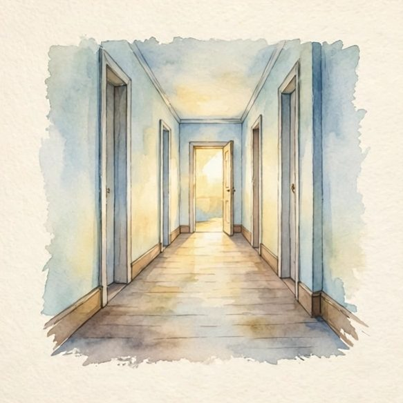
A long corridor ending in one small bright doorway, seen from the near end.
Everyone's life, looked at backward, is a corridor. It runs from the room you are sitting in now — this year, this chair, this version of your face — back through schools and kitchens and cities, through every doorway you ever walked through, and it ends, at the far end, in one small room that was there before all the others. That room is the subject of this house. It is not large, and it does not contain much. But everything in the corridor was built outward from it, the way a tree is built outward from a seed that no longer exists. You do not have to visit it often. You only have to know it is there.
What the room contains would disappoint a surveyor. There is no plot in it, and usually no faces. A patch of light on a floor. The height of a table edge, exactly at the chin. A voice from another room, saying something that has not survived. Two seconds, perhaps, of an ordinary morning several decades gone — and yet the two seconds have outlasted whole years that were, by any reasonable measure, far more important. The house does not explain this. It only keeps the room swept, and the door on its hinges, and the fragment exactly the size it arrived.
The keeper of that room was three, or four, or five — the register is not precise, and precision was never the room's department. Whoever they were, they did not know they were keeping anything. They were simply standing in the light, at the height they happened to be, while the world arrived new. This house is built in their honor and at their scale. Everything here is allowed to be fragmentary, borrowed, undated, unfinished. The only rule is the one the small keeper followed without knowing it: take what is there, exactly as it is, and do not apologize for the size of it.
2The First Room
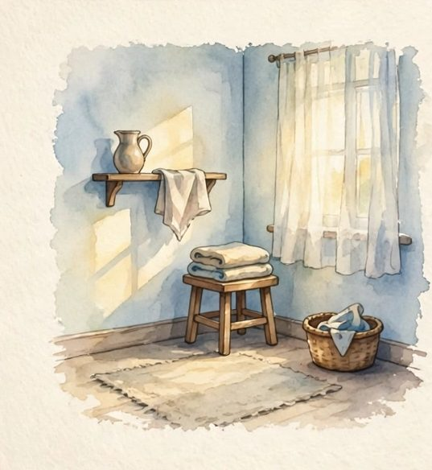
A small room washed in first morning light, low and bright and nearly empty.
The first room is a room in the plainest sense: it has walls you cannot describe and a floor you can. It has light — nearly every keeper's version has light — and it has a position in the house of then, which the keeper could still point to if the house itself were standing. What it does not have is furniture worth mentioning. A chair, perhaps. The edge of a table. The bottom of a door. Later rooms in the corridor are crowded with event; this one is nearly empty, and its emptiness is not a failure of memory. It is the room's original condition. A life had just moved in.
Keepers are sometimes embarrassed by how little is in it. They apologize at the doorway — surely there should be more, a scene, a face, a whole day. The house corrects them gently. A room does not have to be full to be real; it has to be yours. The first room is the one place in the whole corridor that nobody furnished for you afterward. Nobody has redecorated it with stories, or not much. It stands as the small keeper left it: a patch of floor, a quality of light, a sense of the world's size, and the feeling — impossible to argue with — of having been there.
So the house keeps it first in the corridor and last in importance to nobody. Other rooms hold the weddings and the works and the griefs, the whole furnished archive of a life. This one holds the beginning of the keeping itself — the moment the world first stayed. When you walk the corridor, you will pass rooms where a great deal happened. At the far end you will find the room where happening began to be noticed. It asks very little of a visitor. Stand in the doorway. Let your eyes adjust to the scale. Remember that everything you have ever kept was kept, at first, by someone that small.
3Before the Corridor Had Doors
Before the first room, the corridor had no doors. This is the part of the house that visitors find hardest to believe: that a stretch of the life was lived entirely without being kept. Years of it. The small keeper ate and slept and grew, was carried and set down, learned the names of everything within reach — and almost none of it was stored. The house does not treat this as a tragedy or a mystery. Doors are built when there is something to keep behind them. At the very beginning, everything was too new to keep. Keeping starts later, and it starts, as this house exists to show, all at once and very small.
It helps to picture the corridor under construction. At the near end, where you stand now, the doors are many and labeled — years, houses, people, work. Walking backward, the doors thin out. Then comes a stretch where the walls are bare and the light is different, less like a hallway and more like weather. That stretch is not a ruin. It was never built over because it never needed doors; it was the ground the whole corridor was founded on. The first room stands where the building changes character — the farthest point at which anything you own was actually kept by you.
There is no shame in the bare stretch, and the house is firm about this. A life does not begin when the keeping begins; it begins when it begins, most of it off the record, held by other people's arms and other people's memories. The corridor simply reports where your own keeping starts. Everything before the first door is not lost — it was never yours to lose. It belongs to the years when you were the kept, not the keeper. The house asks only that you walk the bare stretch respectfully, the way you would cross a field where you once lived before you could read the name of the place.
4It Is Older Than Your Sentences
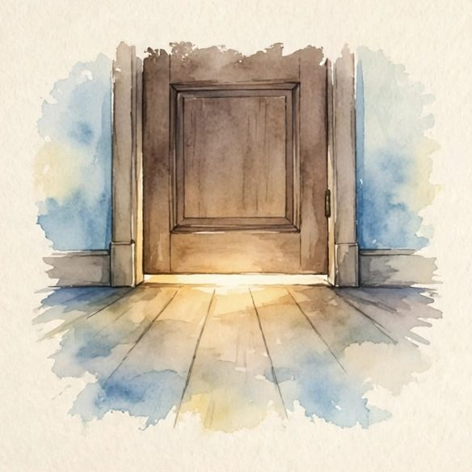
A doorway seen from very low, light coming under the door.
The first room is older than your sentences. It was kept before you had the words for any of it — before floor and light and morning were names, when they were only the world's way of arriving. This is why telling it is so difficult, and why the telling always sounds thinner than the room feels. The sentences are younger than the thing they describe. They arrive with their grammar and their categories, decades late, and try to carry a memory that was never made of language in the first place. Something always spills. The house suggests you expect the spilling, and not mistake it for failure.
Watch what happens when a keeper tries. They say: there was a room, and the light came under the door, and someone was speaking in the next room, and it was morning — and then they stop, slightly embarrassed, because the list sounds like nothing. But the list is not the memory. The memory is the light itself, at that height, with that quiet on the other side of it. Words can point at the room the way a finger points at weather. The house keeps the distinction posted at the doorway: the description is a courtesy copy. The original is kept in a language of one, spoken fluently by a person of three.
None of this makes the room unspeakable — only honestly difficult, which is a different thing. Keepers do tell it, at kitchen tables, in the pauses of other stories, usually beginning with the words: the first thing I remember. And listeners understand more than the sentences carry, because every listener has a room of their own at the far end of a corridor, kept in the same pre-verbal language. The telling works by recognition, not by detail. So the house does not ask you to translate the first room perfectly. It asks you to point at it carefully, and let the other keepers nod.
5The Room Where the World Was New
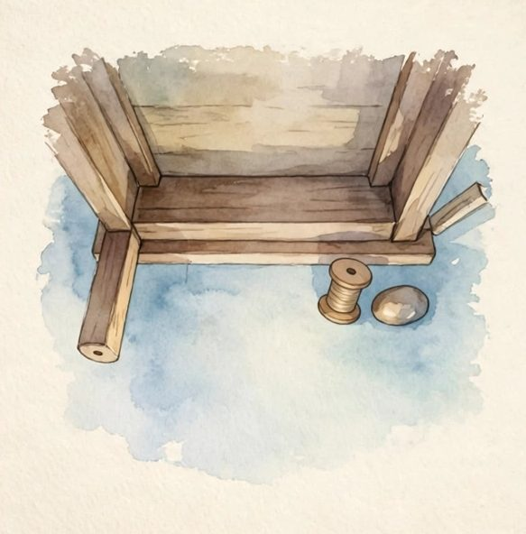
The edge of a wooden table seen from below, at the exact height of a small keeper.
Stand in the first room and look at what the small keeper saw: a world in which nothing had happened before. Every object in the room was being met for the first time, or the tenth, which at that age is the same thing. The table edge had not yet become furniture; it was a wooden horizon. The light had not yet become weather; it was an event. Nothing was familiar enough to be boring, and nothing was known well enough to be feared in the organized way adults fear. The newness was not excitement. It was simply the condition of everything, the way water is the condition of a fish.
This is the room's great difference from every other room in the corridor. Later rooms are full of things being recognized — the same chair, the usual street, the expected face. Recognition is comfortable, and it is also a kind of dimming: the recognized thing no longer has to be looked at. In the first room nothing could be recognized, so everything had to be looked at, and the looking was total. That is why the fragment is so bright in the keeping. It was recorded by an instrument that had no settings yet, no habits, no mercy of familiarity. The light in the first room is the light of a world still being seen.
The house does not suggest that the newness can be recovered, or should be. Adults who chase it — who want the world first-hand again, unmediated and astonishing — are asking the corridor to run backward, and it does not. What the first room offers instead is evidence: that you were once a creature to whom everything was given whole, before summary, before opinion. The evidence is oddly steadying. It means the world's familiarity is a coat you put on, not the world itself. Under the coat, the table edge is still a horizon. The room keeps that fact for you, at the far end, in the first light you can still find.
6You Were Small, and Everything Knew It
Smallness was not a private feeling in the first room; it was announced by everything in it. The counter was above the eyes. The steps were built for legs twice as long. The door handle hung at the height of your forehead, and the window showed mostly sky, because the garden was below the sill. Even the furniture had opinions about your size: chairs were climbed, not sat on. The world was not being unkind. It was simply built at the scale of the giants who ran it, and a small keeper lived in it the way a cat lives in a house — entirely, and at a different altitude.
And the world, knowing your size, kept adjusting itself around you. Hands arrived from above to lift you over the world's thresholds. Voices came down from a great height and slowed themselves, the way weather slows at a coast. You were carried through the parts of the day that were built too large — across streets, up stairs, over the tiring distances — and set down again in the parts that were yours: the floor, the rug, the garden's lower geography. Being small meant the world handled you constantly. The first room keeps that handling in it still: the feeling of altitude changing, of being competently moved.
The house insists on one point here, because visitors get it wrong: the smallness was not a problem. It was not a deficiency the keeper was waiting to outgrow, though outgrow it they did. It was simply the size of the instrument, and the instrument was the right size for the work. A taller keeper would have seen over the table and missed the countries underneath it. A larger keeper would have reached the handle and missed the long education of waiting for doors. The first room was measured by a person of three feet, and its measurements are exact. Nothing about them needs correcting by the adult who visits.
7The First Light You Can Still Find
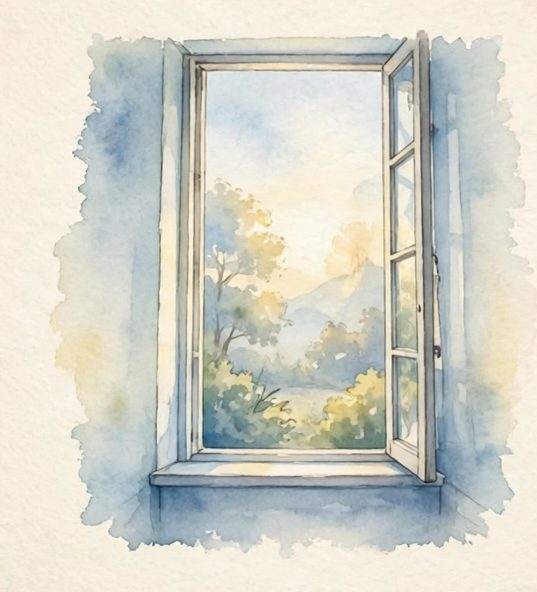
A window taller than the room is wide, with the whole morning standing beyond it.
Ask keepers what survives of the first room and most of them do not begin with a person or an event. They begin with light. It came through a curtain, or under a door, or it lay in a patch on the floor where the sun had been left. Light is the fragment's most durable material, and there is a reason: the small keeper had no use for facts yet, but light was already information. Light said morning. Light said someone is awake in the house. Light said the day is the friendly kind. Before the keeper could read a clock, they could read a room by its brightness, and they read it fluently.
The remarkable thing — keepers say it with some wonder, decades on — is that the light can still be found. Not the room, which may be demolished or in another country. The light. Early morning in a kitchen that faces the right way. A certain latitude in a certain month. A curtain of a certain thinness. And the recognition arrives whole, before thought: this is the light. The body knows it the way it knows a voice. The house keeps a small exhibit of this at the doorway of the first room: proof that something in the fragment was never lost at all, because the world goes on issuing it, morning after morning, in the same edition.
Of course, it is not evidence of anything the lawyers of memory would accept. The light you find at sixty may be brighter, or softer, than the light that was actually there. The first room does not care, and neither, on inspection, do you. What the finding gives you is not proof but company: the discovery that the far end of the corridor and the near end are lit by the same sun, and that something in you has been keeping the calibration all this time. The house files the first light under permanent holdings. It was the first thing the keeper ever kept, and it is the easiest thing in the whole building to revisit.
8Not the First Thing That Happened
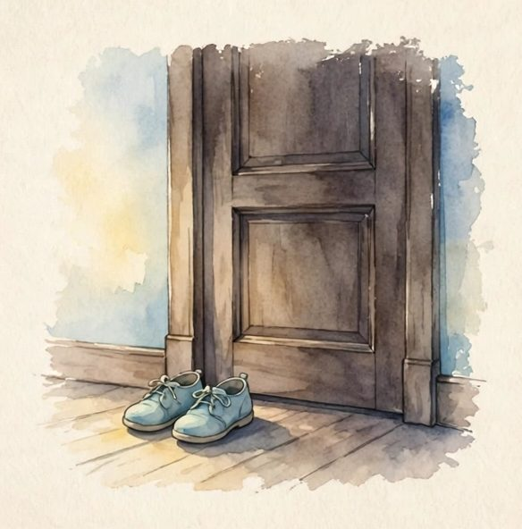
A pair of small shoes waiting beside a door far larger than they are.
Honesty first, because this hall is built on it: the earliest memory is not the first thing that happened. The first things that happened — being born, being fed, the first steps, the first word that made the giants applaud — happened entirely, and the keeper remembers none of them from the inside. They are known, when they are known, from outside: from tellings, from photographs, from the records of the people who were tall at the time. The first room is not diminished by this. It is simply not what it is sometimes advertised to be. It is the earliest kept thing, not the earliest lived thing, and the house prefers the true label.
Why does the keeping start where it starts? The house offers no mechanism and makes no claims; the corridor is not a laboratory. It is enough to notice the shape of the fact. One morning the world began, in small pieces, to stay. Before that morning, the keeper lived in an eternal present tense, everything arriving and everything departing, nothing owed to yesterday. After it, there was a first possession: a patch of light that could be returned to. A life with a memory in it is a different kind of life, and the difference begins here, in a room with almost nothing in it, kept by a person who did not know they had started.
Visitors occasionally want to push the door further back — to insist that something earlier must be recoverable, that the archive must go deeper. The house is gentle and immovable. What was not kept was not kept, and there is no scandal in it. A life is not a surveillance tape; it is a corridor of rooms, and the rooms begin where they begin. The small shoes by the door in the plate above are not waiting to go further back. They are standing where the keeping starts, at the threshold of the first room, in the first light. That is far enough back for anyone. It is, when you think about it, exactly as far back as you go.
9The Room Has No Date on the Door
There is no date on the door of the first room, and keepers have been trying to supply one for as long as they have been visiting. I must have been three, they say, because we still lived in the house with the garden. Or four, because the baby was already born. The arithmetic is borrowed from the corridor's later rooms — from moves and births and the dated furniture of family history. It is clever, and it may even be right. But notice: the room itself never asked. Inside the fragment there is no calendar and no clock. There is a season, perhaps, and a time of day. The year is the visitor's contribution, hung on the door like a wreath.
This undatedness bothers the kind of keeper who likes the archive in order. They would prefer the corridor's rooms to run in a clean sequence, each door numbered, each year accounted for. The house sympathizes and does nothing. The first room predates the numbering system; it was kept by someone who could not yet count the years, let alone file them. Its position in the corridor is known by distance, not by date — it is simply the farthest room, the one at the end of the walk. Some things in a life are located the way stars are located by sailors: not by address, but by being the brightest fixed point in that direction.
So the door stays plain: no number, no nameplate, no year in brass. And there is a kindness in the plainness, because a date would be a claim, and claims can be wrong, and wrong claims about the first room have a way of colonizing it — until the keeper is defending a chronology instead of visiting a memory. The house's policy is written small, at ankle height, where the original keeper would have read it if they could read: the room is early. That is all the dating it needs, and all the dating it will honestly bear. Early is a true word. It is also, not coincidentally, the word the light uses about itself every morning.
10Enter Quietly
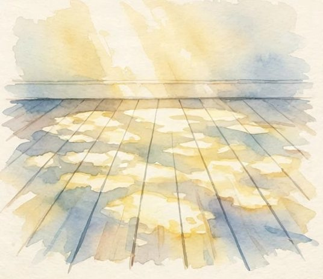
Sunlight falling in a patch on bare floorboards, dust in the air above it.
Every house has rules for its most delicate room, and this house has one for the first: enter quietly. The rule is not about manners. It is about scale. The room was made by a person of three or four, and it keeps its contents at that volume — a patch of light is not a loud thing, and a voice remembered from another room was never raised. Visitors who arrive with the adult world's equipment — questions, theories, a flashlight of interpretation — find the room appears to empty as they enter. It has not emptied. It has only gone quiet, the way small animals go quiet, at the approach of something large and certain.
Quietly means, in practice, a few plain things. Do not demand the rest of the film; there is no rest of the film, and the room tires of being asked. Do not bring the family's later stories in with you and hold them up against the fragment like fabric against a wall; that is work for another hall, and it has its own room. Do not grieve the room's smallness while you are standing in it. And do not stay too long. The first room is a doorway kind of place. Its contents were recorded in seconds, and they are best visited in something closer to seconds than to seminars.
The reward for quiet is that the room gives what it has, which is more than it first appears. Stand still and the patch of light on the floor does its slow work: the scale returns, the world goes large and near again, and for a moment the corridor behind you — the whole furnished length of the life — is the far thing, and this is the near one. Keepers describe it as a kind of brief citizenship in their own beginning. Then the visit is over, and it should be. You step back into the corridor at your full height, and the door closes softly, by itself, the way it has always closed: without a sound you can remember.
11The Keeper Was Three, or Four, or Five
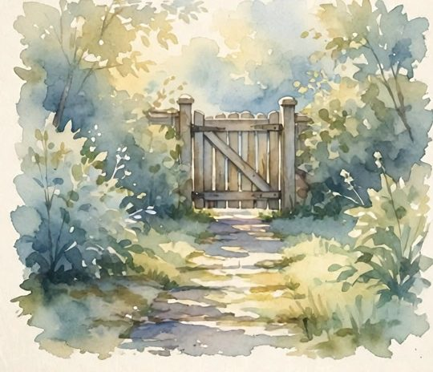
A garden gate at the end of a path, standing in early light.
The register lists the keeper's age the way the room itself reports it: three, or four, or five. Not a number — a small range of numbers, with the uncertainty left in, because the uncertainty is part of the record. Keepers sometimes try to narrow it with the corridor's evidence, the moves and births and dated photographs, and sometimes they succeed. But the room was kept by someone for whom age was not yet a fact about a person. The keeper did not know how old they were, in the way they did not know their own address. They knew the light, the floor, the weather of the house. The register honors the original bookkeeping.
Consider what a keeper of that age was actually equipped with, because the inventory is better than visitors assume. They could read a room's brightness like a headline. They could read the emotional weather of the giants from a doorway, by tone, at a distance, without a word of vocabulary. They knew which floorboards were warm. They knew the sequence of the morning by its sounds. What they could not do was file any of it: no dates, no names for the feelings, no narrative to hang the fragment on. So the keeping is all signal and no summary. The adult who visits receives the signal still, clear as a bell, and must supply the summary humbly, knowing it is theirs.
The house keeps a portrait of this keeper by the desk, and it is not a photograph. It is a height marked on a doorframe — three dates' worth of pencil lines, the middle one smudged. That is the keeper: a rising line, a person under construction, already on duty. Everything in the first room passed through their attention and was kept or not kept by their lights. When the adult visitor feels the urge to correct the room — to wish it larger, clearer, better documented — the house points at the doorframe. The staff was three feet tall. The work they did with the world arriving all at once has lasted eighty years. The review, the house feels, should reflect that.
12Stand in the Doorway a Moment
Most visits to the first room are doorway visits, and the house — which has watched keepers come and go for decades — considers this correct. You walk the corridor's whole length, past the labeled doors of the furnished years, and at the far end you do not move in. You stand in the doorway a moment. The room is small enough, and empty enough, that the doorway is a complete vantage: everything it holds is visible from the threshold, the way everything in a doll's house is visible from outside it. There is no interior to explore. The doorway is not the anteroom to the experience. It is the experience.
There is a humility in the doorway that the house values. Standing there, you are not the room's owner on an inspection; you are its successor, paying a call. The small keeper is, in the only sense that matters, still in residence — the light is still at their height, the table edge still at their chin. To enter fully would be to bring your full size into a place built at another scale and call the collision understanding. From the doorway, instead, you do the one thing the room has ever asked: you witness it. Briefly, at its own size, without improvement. Then the corridor, and your height, receive you back.
This first hall ends, then, at the threshold, with the visitor looking in. The halls that follow will take the room apart with great gentleness — its fragments, its senses, its scale, its tellings — the way you would examine a shell found on a beach: turning it, admiring the construction, never expecting the animal back. But the examination begins from this position and returns to it. So stand in the doorway a moment longer than feels necessary. Let the light find your face at the height it prefers. Somewhere behind you, down the whole length of the corridor, is the rest of your life, being patient. It can wait. It has, after all, done nothing else.
13Fragments, Not Film
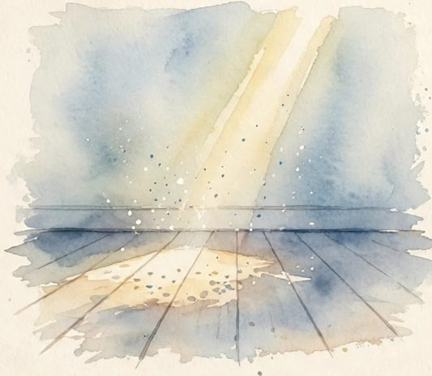
A single shaft of light lying across a wooden floor.
This hall is about the form of the thing, so let it be said plainly at the door: the earliest memory is a fragment, not a film. A film has a beginning that introduces and an end that concludes; it has continuity, coverage, the same face in every scene. The first room has none of that equipment. It has a patch of lit floor and a certainty. Two seconds, held. A voice, without its sentence. A height, without a date. Visitors raised on films keep waiting for the fragment to widen into a scene, the way a photograph widens in a detective's hands. It does not widen. It was never a small film. It is a complete fragment, which is a different and older form.
Why a fragment? The house makes no claims about machinery, but it points at the shape of the evidence. The keeper was working with new equipment in a world that would not slow down. Everything arrived at full size and full speed, and the keeping — which had only just been invented, that morning — caught what it could. It caught the light because the light was steady. It caught the voice because the voice was near. It caught two seconds because two seconds were what a brand-new attention could hold. The wonder is not that so little was kept. The wonder, when you consider the conditions, is that anything was kept at all.
Museums understand the fragment better than cinemas do. A shard of a vessel, in a case, with space around it: nobody demands the whole pot, and nobody calls the shard a failure. The shard proves the vessel, the clay, the maker's hand, the century — it is evidence in its most concentrated form. The first room is the shard of a childhood. Around it, in the case, is the space of everything not kept, and the space is part of the exhibit. This hall will spend twelve rooms on the fragment and its properties, and it will not once apologize for the acreage of the space around it. The space is honest. The shard is enough.
14A Patch of Light on a Floor
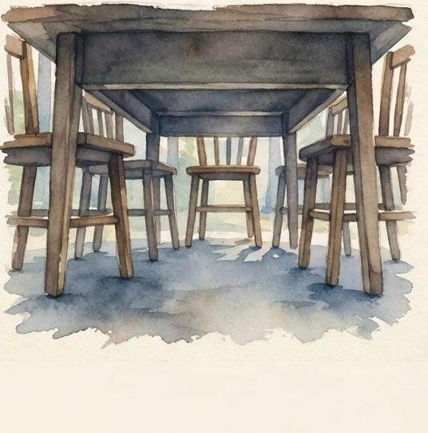
The dim space under a large table, its chairs standing around it like a forest.
For a great many keepers, the whole of the first room is this: a patch of light on a floor. Not a person lit, not an event unfolding — just the light itself, rectangular or slanted, lying on boards or on a rug, with the rest of the room dim around it. Visitors sometimes hear this and wait for more, the way you wait for a speaker to get to the point. There is no more; that was the point. The keeper was at floor height in the world, and the floor was where the light was delivered. What the sun did on the boards that morning was, at that altitude, the main event of the day.
Look at the plate and you will see the keeper's other country: the dim space under the table, where the chairs stand like a forest and the light arrives in columns between their legs. The floor-level world was not a diminished version of the room above it. It was a separate geography with its own climate — cooler, dimmer, smelling of wood and dust and the undersides of things. The small keeper did not experience it as exile from the real room. It was the real room, at the height at which they were issued. Later, the keeper would grow up into the table's country and find it ordinary. The fragment keeps both: the light above, and the forest below.
It is worth asking what a patch of light can actually hold, because the answer embarrasses the film-makers. It holds the time of day, within the hour. It holds the season, by its angle and its warmth. It holds the state of the house — calm, that morning; nobody was shouting; the light lay undisturbed, which means the day lay undisturbed around it. It holds the weather of a whole household in one bright rectangle. And it holds the keeper's own condition, which was: small, unhurried, on the floor, in no danger, with nowhere else to be. That is not a small amount of information. That is a morning, entire, at the resolution the age allowed.
15The Height of a Table Edge
The fragment keeps measurements that no one took. Chief among them: the height of a table edge. Ask the adult keeper how high that table was and they cannot tell you in inches — but put them at the correct altitude, chin level with a wooden edge, and the recognition is immediate and physical. The body was the measuring instrument, and it filed its results in itself. Much of the first room is stored this way: not as statements but as settings. The height of the counter. The depth of the stairs. The distance across the garden, which was a country then. The settings are still in the instrument, unchanged, though the world they measured has been rebuilt.
The table edge deserves its own room because it was a border, and borders are where a small keeper's geography gets interesting. Above the edge: the giants' country — dishes arriving and departing, hands at work, voices, weather systems of conversation. Below the edge: the keeper's country — the cloth's hanging fold, the cool dim, the forest of chair legs, the dropped things that rolled into exile and were found again. The edge itself was the frontier, exactly at chin height, and the fragment keeps the frontier because the keeper lived at it. Most of early life is lived at a border: between the floor and the table, between being held and being set down, between the known room and the corridor's rumor.
Adults lose the settings, mostly, because the world rescales around a grown body and reports itself in the new units: tables come to the waist, stairs to the knee, gardens to a glance. The old units are not deleted; they are retired. Which is why a keeper, visiting a childhood house after forty years, is always startled — the rooms are smaller than the record said. The record was not wrong. It was kept in the original units, by an instrument three feet tall, and it converts badly into the adult edition. The house keeps the first room in its original units out of respect: chin height, floor level, morning. Visitors are asked to do the converting quietly, and to blame the arithmetic, not the room.
The First Room Desk
One desk receives all correspondence for this house — questions, corrections, and word of any first room: its patch of light, its tall doors, its two kept seconds, and how the walk back went. It is read in the order it arrives.
16A Voice, and Only a Voice
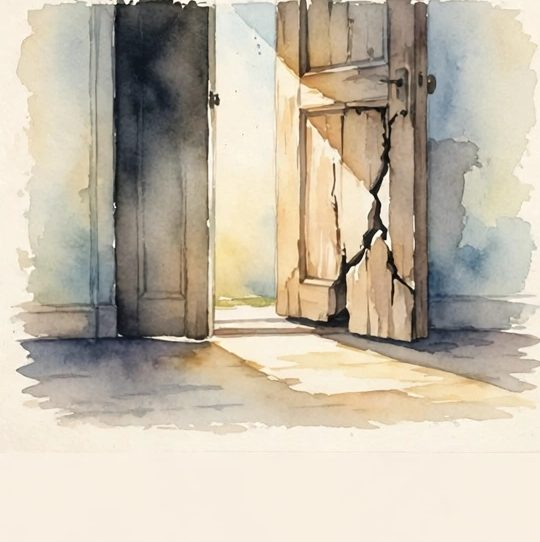
A door half open, with one band of light widening across the floor.
Sometimes the fragment is not a sight at all. It is a voice, and only a voice — no face attached, no room around it, nothing for the eyes to corroborate. A tone, remembered exactly: its height, its warmth, its distance through a wall. Keepers who hold this kind are sometimes apologetic, as if sound were a lesser currency than pictures. The house disagrees, on evidence. Of all the senses, hearing was the keeper's first fluent one; the womb had a soundtrack, and the world after it was announced in voices before it was arranged in views. A voice may be the oldest kept thing a person owns.
What the voice carried, the keeper understood completely, and this is the part that surprises adults: the understanding was total, though not one word of it can now be repeated. Tone arrived before vocabulary and was read more accurately than vocabulary has ever been read since. A voice could be classified in an instant — safe, tired, joking, calling, warning, singing to itself — and the classification governed the small keeper's whole weather. The words were decoration on a signal that needed none. So when the fragment keeps a voice without its sentence, it is not keeping the husk and losing the kernel. The sentence was the husk. The tone was the kernel, and the tone is what survived.
Whose voice was it? The house is asked this often, and answers with a shrug it has perfected over the years: perhaps a parent's, perhaps a grandparent's, perhaps the radio's, perhaps — and this possibility is filed without embarrassment — a voice assembled later, the way a face in a dream is assembled. The fragment does not come with a name tag, and the keeper is not required to forge one. A voice without a certain owner is still a kept thing, the way an unsigned letter is still a letter. What matters is that someone spoke, in that tone, within earshot of the beginning of a life, and the life kept the sound of being spoken to. That is the exhibit. The attribution can stay open.
17The Middle Without the Beginning
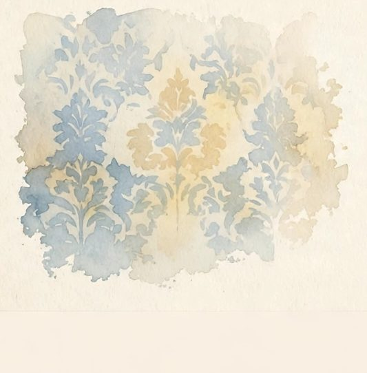
A patch of faded patterned wallpaper, its design worn soft by years of light.
The fragment begins in the middle. This is so consistent, across so many keepers, that the house treats it as a law of the form: no arrival, no approach, no establishing view — suddenly, the morning is already on, the keeper is already on the floor, the light is already lying where it lies. Films are embarrassed by such openings and spend money avoiding them. The fragment spends nothing. It begins where the keeping began, and the keeping began mid-scene because life was already in progress when the instrument arrived. The beginning of the memory is not the beginning of the morning. It is only the moment the lights of attention came up, somewhere in the middle of the world's performance.
Nor does the fragment end; it stops. The patch of light does not resolve into breakfast. The voice does not finish its sentence. The middle is all there is, an island of kept time with water on every side, and the water is not a defect in the island. Keepers sometimes find this vertiginous — where was I before the light, what happened after the voice — and reach for the family's stories to build causeways. The house does not forbid the causeways; a later hall is devoted to them. It only insists they be recognized as built, and recent, and made of other materials. The island itself stands in its one tense, which is not past. In the first room it is always, still, that morning.
There is something the middle knows that beginnings and endings do not, and the house — after a century of listening at this doorway — thinks it is the fragment's real cargo. A beginning knows causes. An ending knows consequences. A middle knows only presence: how it was to be there, at that height, in that light, while the world was entirely uninterpreted. Beginnings and endings are where narrative lives, and narrative is the adult's country. The middle is the child's. So the fragment's shape is not an accident of decay. It is a portrait of how the world is experienced before anyone starts explaining it — from inside, at floor level, in the present tense, without a plot to hold it up.
18One Minute, Kept Whole
Now and then, a keeper holds more than two seconds. They hold a minute — a whole minute, entire, with its own inside weather and a small sequence of events. The kettle is lifted; someone crosses the light; a door sounds in another part of the house. Nothing is decided in the minute and nothing concludes, but it has continuity: one thing follows another at walking pace, the way life does when it is not being summarized. Keepers of a whole minute tend to speak of it the way people speak of an inheritance — slightly surprised at their own wealth. The house receives these reports with respect, and files the minute as the first room's long gallery: rare, and no more required than it is refused.
What a whole minute holds, beyond the two seconds of the patch of light, is change — the discovery, kept in the original, that the world moves and that its moving can be watched. The light is crossed by a shadow and is light again. A sound approaches and recedes. The small keeper, who in the two-second fragment is a pure witness, in the minute becomes something slightly more: a spectator, with a before and an after to compare. The house notes this as the corridor's first hinge. Everything later — stories, histories, the whole narrative furniture of a life — is built on the capacity discovered in that minute: to hold two moments at once and feel the difference between them.
And yet the house is careful, at this exact point, to keep the accounts fair: the minute is not better than the two seconds. It is only longer. A keeper with two seconds has not been short-changed by the corridor; they hold the same morning at a different resolution, and resolution is not value. Some of the most entire first rooms on record are two seconds long and contain, compressed, what the minute spreads out: the light, the scale, the safety, the sense of the world's newness. Length is the least interesting property a memory can have. The house measures its rooms by brightness and by truth, and by neither measure does the minute outrank the fragment. They hang in the same gallery, in the same light.
19The Fragment Does Not Apologize
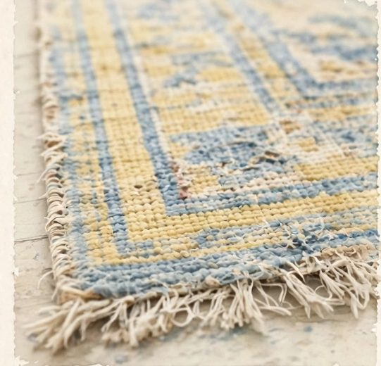
The worn border of an old rug, seen close, thread by thread.
Here is the room where the house states its policy in full, because everything else in this hall depends on it: the fragment does not apologize. It does not open with a disclaimer about its size. It does not close with a promise that more is available elsewhere. It stands in the case with the space around it, and the space is not an embarrassment it is managing. Keepers, though — keepers apologize constantly, on the fragment's behalf and without its permission. It isn't much, they say, at dinner parties. It's only a patch of light. The house has heard the only so often that it has posted a correction at the doorway: the word only is not admitted in this hall.
Where does the apology come from? Mostly from comparison, which is the adult corridor's favorite indoor sport. A keeper hears another keeper's earliest memory — full of faces, dialogue, a whole expedition to a lake — and looks at their own two seconds of lit floorboards and feels the poverty. The house, which keeps both files, offers a sobering footnote: the rich film has usually been renovated. Faces and dialogue are the two materials that later tellings supply most freely, and they adhere to a fragment the way ivy adheres to a wall, until the wall cannot be seen. The spare fragment is often not the emptier memory. It is the less decorated one, and decoration is not evidence.
So the fragment stands, in this house, with the full dignity of a finished form. A haiku is not a failed epic. A shard is not a failed pot. Two seconds of morning, kept whole for eighty years through everything a life contains, is not a failed film — it is one of the most durable objects in the building, and it was made by a person of three with their eyes open. The visitor who learns to stop apologizing for it discovers that the fragment, undefended, becomes easier to visit: no presentation to prepare, no case to argue. Just the light, at its original size, doing what it has always done. Kept. That was always the whole of the job.
20What a Fragment Can Hold
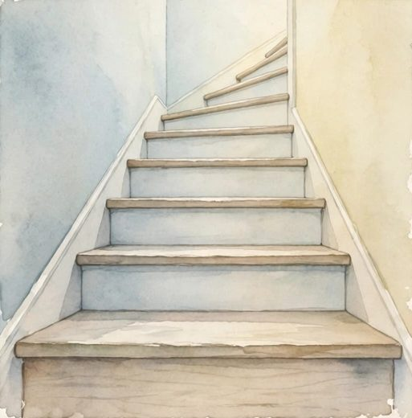
A staircase seen from its first step, rising out of the top of the frame.
Inventory, then, for the skeptical: what can a fragment hold? It holds the weather of a household at a particular hour — whether the air of that morning was calm or hurried, safe or strained — and it holds this with a reliability later summaries rarely match, because the small keeper had no theory to fit it to. It holds scale: the true sizes of the world before the world shrank. It holds season and latitude, in the angle of the light. It holds the presence of other people as a climate rather than as portraits. And it holds the keeper's own state, entire: fed or hungry, held or set down, at peace in the new world. That is the inventory of two seconds: not a partial document but a complete one, of a small country, at an early hour.
It also holds relationships in solution — dissolved, the way salt is in seawater, everywhere and nowhere visible. The fragment's morning is populated even when no face survives in it: the voice implies a speaker, the lifted kettle implies hands, the calm implies a household being competently run by someone. Later, the keeper will attach names and faces to these implications, some correctly. But the fragment's own form of the knowledge is earlier and in a way truer: not who was there, but that there was a there there — a staffed world, a warmed room, a day being handled. A child does not keep a cast list. A child keeps the feeling of a house with people in it, and the feeling, in the fragment, is kept perfectly.
Think of the fragment as a concentrate. Two seconds of it, dissolved into the long solution of a life, still flavor everything — the keeper's lifelong sense of what morning is for, of what a house should feel like at its best hour, of what safety is shaped like. Concentrates are not diminished by the smallness of their container; the container is small because the contents are strong. So the house files the fragment under essences, not under excerpts. It is not the part of the childhood that survived. In the ways that matter to the person carrying it, it is the childhood, at full strength, in a two-second bottle — and the bottle, after eighty years, has never once leaked.
21The Gaps Are Part of the Furniture
Between the fragment of light and the fragment of voice there may be nothing at all — a gap of unrecorded time, in which the keeper presumably ate and grew and was rained on and learned a hundred things, none of them kept. Visitors tend to peer into these gaps as if they were damage: water stains on the archive, pages stuck together. The house asks them to look again. The gaps are not where the memory failed. They are where the memory, having caught what it caught, rested. A keeper of three was not a recording service. They were a person at breakfast, and breakfast was not always, or even usually, an occasion for the permanent record.
The temptation, of course, is to fill them. An adult keeper with a lively mind can pave a gap in an afternoon: the voice becomes grandmother, the light becomes the house on the lake road, the morning acquires a dog. Some of the paving may even be accurate — borrowed from tellings, fitted neatly. The house does not confiscate the paving stones. It only requires them to be stamped, the way builders stamp bricks: made later, of other clay. An honestly stamped invention can stay in the room as a visitor. An unstamped one is a squatter, and squatters, given decades, have a way of signing the register in the original keeper's name.
Think of a room you actually live in. Its character is not only the furniture; it is the open floor between the furniture, the distances you cross without thinking, the corner where nothing stands and the light does. Remove the open floor — pack the room to the ceiling with chairs — and you have not improved the room; you have abolished it. The first room is arranged the same way. Its gaps are its open floor: the space the light and the voice do not occupy, across which the visitor moves freely, at the keeper's original scale. The house's whole art of keeping could be stated as a furniture policy: keep what is there, leave the spaces empty, and call the arrangement by its true name — a room.
22A Beginning Remembered from Inside
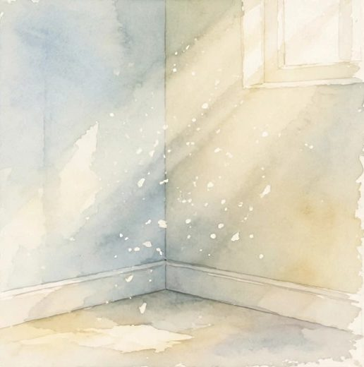
A sunlit corner of a room, dust drifting slowly through the air.
Every keeper owns two kinds of beginnings. The first kind is known from outside: the birth, the first steps, the famous first word — events witnessed by the tall, recorded in their albums and their anecdotes, and handed down like furniture. The second kind is known from inside, and there is exactly one of it: the first room. It is the only beginning the keeper attended in the first person. Everything earlier is biography. This is eyewitness testimony, the only page of it the keeper will ever hold. The house treats the page accordingly — not as the most complete document in the archive, but as the only one written by the person it is about, at the time, from within.
And here is the strangeness the house never tires of: remembered from inside, a beginning does not feel like a beginning. There is no threshold in it, no sense of a door opening on a life. The keeper is simply there — on the floor, in the light — with the unarguable feeling that the world has been going on at exactly this pitch forever. Beginnings look like beginnings only from outside, to witnesses with a before to compare. From inside, the first room is not a start; it is a middle that happens, by accident of survival, to be the earliest middle on file. Which may be the honest shape of all beginnings: none of them announce themselves. They are appointed afterward, by the corridor, looking back.
The house draws one practical consequence from all this, and posts it here for the visitors who arrive wanting their beginning to feel momentous. It will not feel momentous. It will feel like a morning. The monumentality is the visitor's addition, hung on the fragment the way dates are hung on the door — kindly meant, and entirely optional. What the inside view offers instead of monumentality is rarer: the sensation of the world before it had been explained to you, kept by the only reporter who was present. Every other room in the corridor is a report of the world interpreted. This one is the world raw, by the ladle, at floor height. The house will trade grandeur for that, any day.
23Two Seconds of Summer
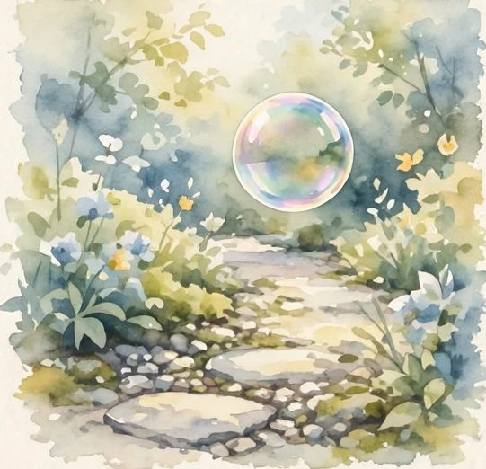
A soap bubble drifting over a garden path, carrying the whole sky in miniature.
When keepers describe their fragment, a surprising number use the same two measurements: two seconds, and summer. The house has stopped being surprised. Summer is the season of floor height — the season when the small keeper's country expands to include the garden, when doors stand open and the light lies around in patches all day, when the world is at its most available to a person whose range is short and whose altitude is low. And two seconds is the size an unpracticed attention can hold at full brightness. Put the two together and you have the standard exhibit of this hall: two seconds of summer, kept whole, carrying the entire climate of a season in the space of a breath.
Look at the plate: a soap bubble over a garden path, carrying the sky. The house chose it for this room because the bubble is the fragment's exact emblem, and not for the reason visitors first assume. Not because it is fragile — the bubble in the keeping has outlasted the garden, the house, and several of the giants. Because it is complete at its size. A bubble holds the whole sky, curved and entire, in an inch of air; it is not an excerpt of the sky. Two seconds of summer work the same way. The heat is in them entire. The grass at eye level is in them. The sound of the house behind, doing its morning, is in them. Nothing about them is a trailer for a longer film.
There is a temptation to call such a fragment a glimpse, and the house has banned the word in this room, for reasons of accuracy. A glimpse implies a larger scene existing elsewhere, of which you caught the edge. But the two seconds are not the edge of anything the keeper possesses. They are the whole of the possession, and they contain their season the way a seed contains its summer — not by depicting it, but by being able to unfold into it, in the visitor, on every visit. Keepers unfold it for eighty years and the supply does not diminish. The house knows of no film, however complete, that can be watched for eighty years without wearing out. The fragment can. That is the house's whole argument, and it rests it here.
24Let It Stay a Fragment
This hall closes with the house's simplest and most disobeyed request: let it stay a fragment. The disobedience is always well meant. A keeper visits, falls in love with the two seconds all over again, and wants — out of love — to give them company: a face for the voice, a before for the middle, an after for the stopping point, names for the giants, a floor plan for the house. Every addition arrives dressed as a gift. But the original keeps a ledger of its own, and in the original's ledger each addition is registered differently: as a small, polite eviction. The improved version moves in. The fragment moves one inch further back, behind its own renovation.
The mechanism is worth understanding, because it operates in every hall of this house. The added face is vivid — imagination works in high resolution — and the fragment is, by comparison, dim and quiet. Within a few visits, the keeper is seeing the renovation and remembering the renovation, and calling both the memory. Nothing dishonest has occurred; that is what makes it worth a warning. The mind paves its gaps the way water finds a floor: automatically, in the night, without malice. The house's countermeasure is equally automatic, once learned: on every visit, ask which parts arrived in the original shipment. The light did. The voice did. The face — the face is wearing a stamped brick, if the keeper has been honest. Let it wear it openly.
So the visitor leaves this hall as they entered the first room: quietly, and without new furniture. Ahead lies the hall of the senses, where the fragment will be taken apart sense by sense, and the hall of the large world, and the harder halls of tellings and photographs. All of them will honor the same discipline learned here: describe what is there, label what is borrowed, and let the rest stay unbuilt. The fragment at the far end of the corridor has survived a whole life at its original size, in a building where everything else was renovated many times. It asks the visitor for the only courtesy that has ever preserved it: to be visited, not remodeled.
25The Senses Were First
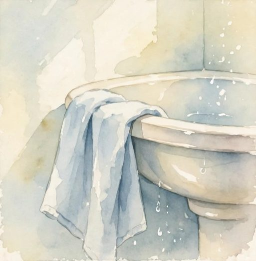
A washbasin and a folded towel in clear morning light.
Before there were words, and before there was anything as organized as a story, there were the senses, and they were already on duty. This hall is their inventory. The first room was not furnished by the eyes alone, the way the later rooms in the corridor mostly are — the adult world is a visual place, documented in photographs. The small keeper's world arrived on every channel at once: through the skin, the ears, the nose, the tongue, and only afterward, it sometimes seems, through the eyes. The keeping reflects the order of arrival. That is why the first room, described, sounds so physical: it is a record made by a body that had not yet appointed the mind as its secretary.
Consider the order in which a morning reached the keeper in the first room. Smell, probably, was first — the house announcing itself before a single shape resolved. Then sound: the household's machinery warming up, dishes and doors and voices in other rooms. Then warmth, registered on the skin like a report from the weather office: the day would be the warm kind. Then light, arriving in its patch. Then, last and least, the facts — who, what, where — which the keeper mostly never collected at all. The adult visitor, raised to lead with the facts, reads this order backward and finds it upside down. The house reads it as it stands. In the first room, information traveled from the world to the skin to the heart, and only much later took the long way around through the mind.
The halls of this house proceed by an old courtesy: they take the keeper's records in the form the keeper made them. So this hall will not translate the senses into ideas, or rank them, or hurry past the physical to reach the meaningful. It will go sense by sense, the way the morning did. The smell of that house. Hands, before faces. The sound of dishes. Warmth as information. The taste of almost nothing. Textures the hands still know. By the end of it, the visitor may understand the first room differently — not as a place the keeper saw, but as a place the keeper was, in every register a small body has. The senses were the first staff of the archive. This is their hall of honor.
26The Smell of That House
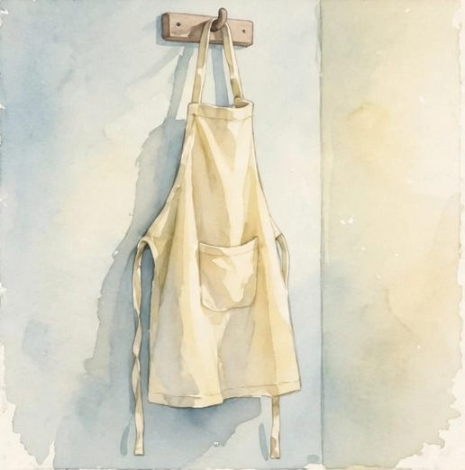
An apron hanging on a kitchen hook, keeping the shape of the morning's work.
Every house of that era had a smell, and no two keepers' houses smelled alike. It was a compound: soap and woodsmoke, boiled milk and floor polish, wool kept in a drawer, the particular dust of that staircase, the season coming through the window. The small keeper never noticed it, of course — you do not notice the medium you swim in — but the nose was keeping minutes the whole time. Of all the records in the first room, the smell is the one the adult can least reconstruct on purpose. It cannot be described into existence. It can only be met, by accident, in a stairwell or a stranger's kitchen, forty years later — and then it is not remembered. It is simply there, and the room is open.
Notice what the smell does not do: it does not argue. A photograph can be doubted, a telling can be corrected, but a smell arrives with the authority of weather — it does not present credentials, it simply changes the air. This is because the smell bypasses every later department of the keeper. It was filed before filing existed, in the oldest cabinet of the archive, and it opens that cabinet directly. For one breath, the adult is not remembering the first room. The adult is standing in its doorway at the original altitude, with the corridor — all fifty years of it — momentarily not there. Then the breath ends. The house posts this room as the archive's most honest door, and its least convenient: it opens only from the other side, and only when it wants to.
The melancholy fact, which this room states without flinching, is that the smell no longer exists anywhere in the world. The house was repainted and sold, or demolished; the soap is no longer manufactured; the woodstove is a museum piece. The compound survives in exactly one location: the keeper. Which makes the keeper the last building in which that kitchen still stands, at full strength, in the original air. The house finds this less sad than it sounds. An archive that can be carried is not at the mercy of landlords. The smell of that house had one copy, and the copy was issued to the person it was about. It has been kept, without maintenance, for the whole length of the corridor.
27Hands, Before Faces
At the keeper's altitude, giants were mostly hands. Faces were weather seen through a telescope — distant, expressive, not much consulted. Hands were the part of the adult world that actually arrived: descending with food, with cloth, with the tools of the day; lifting the keeper like furniture being kindly rearranged; fastening what the keeper could not fasten; wiping what the keeper had, inevitably, spread. The fragment keeps hands the way later rooms keep faces — as the primary identity documents of the people involved. This one set down a cup. This one tied. This one was warm from the stove. Long before the keeper could pick a face out of a crowd, they could have passed an examination on the hands of their household.
Hands were also the first text the keeper ever read. A hand could be read at a distance, in bad light, without a word of the language: open meant come, or take; turned down meant wait; moving fast meant the day was hurried; moving slowly meant the day was safe to be small in. The keeper's fluency in hands preceded every other literacy and in some ways outperformed them all — the adult, decades on, still reads a room's hands first when entering a strange kitchen, and trusts the reading. The house posts this as the archive's first reading room. The collection was five fingers at a time, and it was checked out constantly, and none of it was ever returned late.
Faces came later, and the house means this almost literally. As the keeper grew, and was lifted, and stood on chairs for ceremonies, the faces descended into range and were learned — each one assembling itself, over years, into the portrait the adult now carries. But the portraits were built on a foundation of hands, and the foundation is older than the building. Which is why, in the fragment, a keeper can be entirely certain of a person and entirely unable to produce their face. The certainty is not a lesser evidence. It is the first evidence, kept in the first medium: the memory of being handled by the world, carefully, at exactly the height where the world needed handling.
28The Sound of Dishes
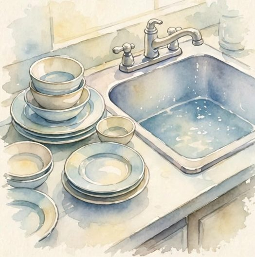
Dishes stacked beside a bright sink, catching the morning.
The sound of dishes was the household's percussion section, and it played at the hinge hours of the day. It said, before anything else could say it, what kind of morning this was. Dishes done briskly meant a day in good order. Dishes done slowly, with pauses and water running, meant a day with something on its mind. To the small keeper, lying or sitting at the altitude of chair legs, the sound arrived without its causes attached — pure information about the weather upstairs. A child who can hear the kitchen is never entirely out of the loop. The kitchen, heard, was the first news broadcast of the keeper's life, and it was remarkably accurate.
There is a reason this particular sound survives when louder ones do not. The sound of dishes is the sound of care being performed — of the world's machinery working on the keeper's behalf, in the next room, at the hours when the keeper most needed the world to be working. Plates do not stack themselves in a house where no one is attending. The small keeper registered the attendance without concepts for it: the clatter was the sound of being looked after, heard through a wall, in the dark of early morning or the dim of evening. Later rooms in the corridor hold louder records — engines, crowds, ceremonies. This one holds crockery, and the house rates it among the most truthful sounds in the building.
Keepers report a curious afterlife for this sound. In a strange kitchen, in another country, at the far end of the corridor of years, the clink of dishes being put away can still discharge its old duty in an instant: the adult stops, mid-sentence, oriented — the way a compass needle orients, without deciding to. Something small and original in them stands at attention: the day is being handled; the machinery is attended; all is, provisionally, well. The house does not call this nostalgia. Nostalgia is a sentiment about the past. This is equipment, still functioning. The ears learned their first lesson in a kitchen's percussion, and the lesson, like all first lessons, was never unlearned — only, eventually, understood.
29Warmth as Information
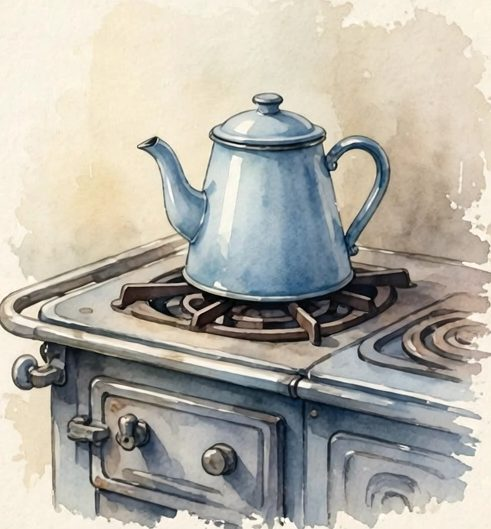
A kettle on an old stove, the whole room's warmth gathered around it.
Warmth was information, and the small keeper was its full-time analyst. The skin knew the house's climates the way a sailor knows a coast: here the stove's country, warm and smelling of iron; here the sun's province on the floorboards, available on schedule; here the cold territories — the hallway in winter, the far side of the bed, the floor first thing. The map was drawn in degrees, not in rooms, and it was consulted constantly, because a small body is a thermometer with opinions. Where the warmth was, there the day was livable. The keeper's whole early geography can be honestly redrawn as a heat map, and the house has done so: it hangs beside the desk, in shades of amber.
Chief among the warm countries was the one that moved. Being held was the first address — this house stated it in an earlier hall and restates it here, because in the hall of the senses it belongs to the record of the skin. Before the keeper had a room of their own in any sense, they had a climate of their own: the temperature of being carried, which was the temperature of a person, which was the warmest reliable reading in the world. The fragment keeps this as faithfully as it keeps the light. Ask the adult what the first room felt like and, before any picture arrives, the answer comes in the oldest units: it felt warm. The archive's first entry is a temperature.
The house is aware that warmth, filed this way, sounds like a metaphor for safety, and it wishes to be precise: in the first room it was not a metaphor. It was a measurement. Safety had a temperature because the keeper's world was administered at skin level, and the correlation the skin recorded — warm meant attended, attended meant safe — was drawn from thousands of observations and never once falsified in the fragment's two seconds. Later, the adult would learn that the world contains warm dangers and cold kindnesses, and would file the correction. But the first room keeps the original correlation unamended, and the house keeps it too. It was true at the height at which it was measured. That is the only kind of truth the archive has ever claimed.
30The Taste of Almost Nothing
The register of tastes, in the first room, is the shortest page in the archive, and the house reads it aloud entire, because its shortness is the point. Warm milk. Bread, at the soft stage. Porridge, sweetened or not. Water, which had a taste then, being drunk from particular cups in a particular kitchen. And that, very nearly, is all. Taste kept the least of any sense — which stands to reason, since taste was the most administered of the senses: the menu was written by the giants, and it was not a varied document. The keeper's tongue was a citizen of a small and honest country, and its reports are brief because the country was.
But look closer at the almost nothing, because the house has, and it is not nothing. What the tongue kept was not flavors but a flavor — the taste of the plain, administered kindly, at the temperature of the room. Later in the corridor, taste would become the most adventurous of the senses: travel, appetite, strong opinions, whole rooms of the archive furnished with feasts. All of it was built on this first page, the way a library is built on a primer. The primer's lesson was not about food. It was the discovery that the world, at its most basic, was edible and intended to be — that things arrived from the giants' country in a form the keeper could take in. First metaphysics, at spoon level.
The house is firm on one point in this room, because a certain kind of visitor always tries the opposite: the almost nothing is not to be improved. Later keepers, embarrassed by the brevity of the taste register, are tempted to stock the first room's pantry retroactively — to remember birthday cakes and holiday tables and assign them to the fragment's morning. Those feasts happened, most likely, and have their own rooms further up the corridor, with dates on their doors. They do not belong here. Here, the spoon, the small cup, the plain cloth, the warm near-flavorlessness of being fed before flavor was a category. The register prefers its shortest page exactly as it was submitted: nearly blank, and entirely true.
The First Room Desk
One desk receives all correspondence for this house — questions, corrections, and word of any first room: its patch of light, its tall doors, its two kept seconds, and how the walk back went. It is read in the order it arrives.
31The World Was Loud in Places
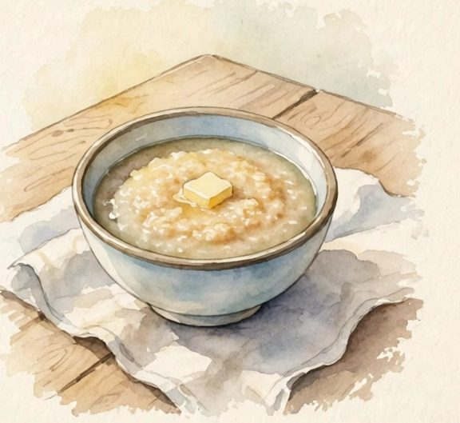
A bowl of warm porridge waiting on a table in a shaft of light.
The world was loud in places, and it arrived at the keeper unfiltered, at full strength, without any of the muffling that adults install between themselves and the day. There was no volume knob within reach — there was barely a knob within reach — and so the soundscape of the first room is kept at concert pitch: the kettle's rising argument, the door's whole opinion, the dog's bulletin from the yard, thunder taking the sky's testimony, the giants laughing somewhere above, which was the loudest weather of all and the safest. The keeper did not experience this as noise. Noise is a category for people with somewhere quieter to be. It was simply the world's volume, and the world, mostly, was in a good mood.
Loudness, in the keeper's geography, was a kind of map. There were loud countries and quiet ones, and the borders between them were doors. The kitchen at full operation was the capital of noise; the stairs were a pass through which sound traveled in both directions; the far room, the one with the curtain, was abroad — sounds arrived from it muffled, as if cleared through customs. The keeper learned the house by ear the way sailors learn a coast by its bells and foghorns. And the learning was practical: from the soundscape alone, from a blanket at dawn, the small keeper could report the household's position, its industry, and its mood, without opening an eye.
What the ears were really studying, beneath the map, was a classification the keeper would use for the rest of the corridor: the difference between loud-and-safe and loud-and-not. Thunder was loud-and-safe, from inside the warm countries. A raised voice could be loud-and-not, or loud-and-joking, and the difference was in the grain of it — a distinction the keeper drew flawlessly at three and draws still, in boardrooms and doorways, before a single word is parsed. The house files this as the archive's most durable piece of intelligence work. Volumes change across a life. The classification does not. It was installed by the first room's soundscape, and it has never once been uninstalled.
32Textures the Hands Still Know
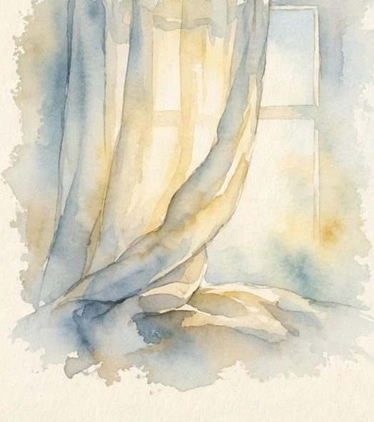
A curtain glowing with the morning light standing behind it.
The hands kept their own archive, and it was not the one the eyes were keeping. The eyes took the light; the hands took the world. Wool, first — the particular roughness of the blanket that meant sleep. Wood grain, running the right way under the palm. The cool of a wall at nap height. The banister's polished spine, smoother than anything else in the house from ten thousand descents. The rug's border, raised like a road on a map. Each texture was filed with its meaning attached: this one is the blanket, this one is the table's leg, this one is the cat, who had opinions about being filed. The hands were the keeper's customs officers, and everything entering the keeper's world was inspected by touch before it was admitted.
Touch was the audit department of the early world, and it was incorruptible. The eyes could be fooled — a picture of a fire is not warm — but the hands dealt only in originals. What they certified, the keeper believed entirely: the step is really there, the cup is really hot, the hand that holds yours is really holding. This is worth pausing on, because the corridor's later rooms run increasingly on testimony — on reports, images, descriptions of things not present. The first room ran on touch. Its epistemology fit in a fist. And something of that standard survives in every keeper: the adult, offered a wall of certificates, still reaches out — at a market stall, in a strange house — and touches the cloth, the fruit, the wood, to know.
The afterlife of the textures is the part keepers report with the most surprise. In a strange house, in another decade, the adult hand closes on a banister — and stops. The wood is right. The polish is right. For one second the whole body is three feet tall again, on a staircase that no longer exists, in a house that was sold before the keeper learned to read. Nothing has been remembered in the usual way; no picture formed; no story assembled itself. The hand simply recognized its first country. The house keeps a drawer for these recognitions and labels it plainly: textures the hands still know. It is one of the archive's most-used drawers, and it has never needed a lock.
33Light Through a Curtain
The first room's commonest lighting was not the clear light of the patch on the floor. It was light through a curtain — the world translated, the day arriving softened, shapes reduced to their intentions. Behind the curtain, the garden was a green rumor. A person passing was a change in the brightness, no more identified than a cloud crossing. The keeper lived, most mornings, in this translated light, and the house thinks it shaped the archive more than the famous patch did. The patch is what keepers remember. The curtain is the condition they remember in: knowing that everything was there, and seeing almost none of it clearly, and finding that arrangement entirely normal.
Consider what the curtain taught, because it was a complete education in the epistemology the keeper would need for the entire corridor. Behind the cloth: the world, entire and in session. In front of it: a small person, receiving bulletins in the form of light. The bulletins were true — the garden really was there, the passer-by really passed — and they were radically incomplete, and both facts held at once without distress. That is the condition of nearly all later knowledge, as the corridor will demonstrate at length: reports of a world mostly behind curtains, believed on the strength of their light. The keeper learned to live by bulletins at three. The adult calls it judgment. The house calls it the curtain, remembered.
Keepers, visiting, sometimes ask why the curtain was never simply opened — why the fragment did not include the one gesture that would have clarified everything. The house answers with the room's own physics: the keeper was three, the curtain was high, and clarification was not the keeper's department. But there is a deeper answer, and the house gives it in this room because the room is about light: the curtain was not an obstacle to the morning. It was the morning's delivery system. Uncurtained light belongs to the giants' country, to noon and full stature. The translated light — amber, patient, admitting silhouettes and withholding faces — was the form in which the world first agreed to be known. The archive honors the agreement exactly as it was struck.
34The First Address Was Being Held
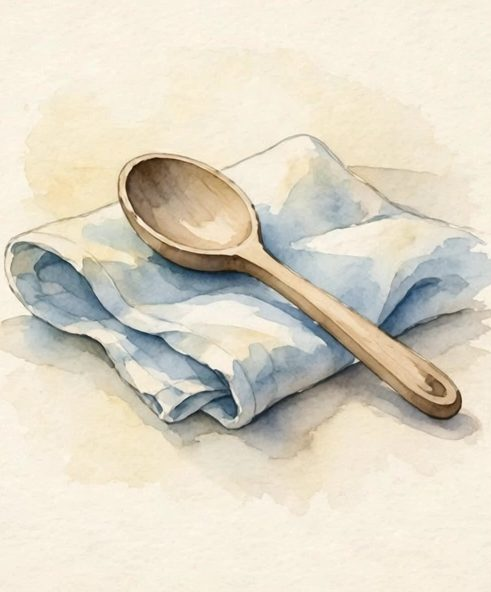
A wooden spoon resting on a folded cloth beside the stove.
Before the keeper had an address in the world's system — a street, a number, a door that was theirs in law — they had an address in the older system, and it was a person. Being held was the first address. It had no coordinates that a map would accept, but it had everything an address is for: it was where the keeper could be found, where deliveries of food and comfort arrived, where the keeper returned, a hundred times a day, from the far countries of the floor. Ask the fragment where the keeper lived at the time of the first room and it does not name the house. It names the altitude of being carried, and the climate there, and the view.
The address moved, which no later address has managed. It proceeded from the kitchen to the garden at the pace of the day's work, and the keeper's world proceeded with it — the whole geography of the morning rearranged around a walking center. This explains a quality of the first room that baffles cartographers: its spaces do not join up. The patch of light and the garden and the voice's room coexist in the fragment without corridors between them, because the keeper never traveled between them on foot. They were carried, and carrying erases the journey and delivers the destination. Later, the keeper would learn the world's continuities by walking them. In the first room, the world was a set of islands, and the address was the boat.
Every later address in the corridor is measured against this one, whether the keeper knows it or not. Houses are chosen, all down the years, by a committee whose oldest member is three feet tall and votes for warmth, for a center, for a place where the world is competently held together by someone. The adult calls the committee taste, or instinct, or the feeling of a house when you first walk in. The house is more precise: it is the first address, consulted. It never had a street name. It had arms, and a temperature, and a view over a shoulder of the whole new world going past. The register lists it as the keeper's residence of record for the entire period of the first room, and the record, on this point, is not nostalgia. It is title.
35What the Ears Learned First
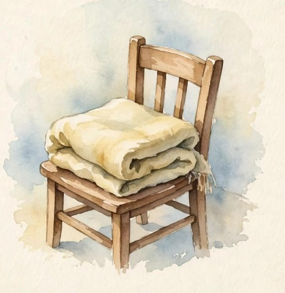
A small folded blanket resting on a chair in the morning light.
What the ears learned first was not words. It was the weather system of voices — the household's whole emotional climate, delivered by tone, in a language older than any the keeper would later speak. A voice rising meant weather coming. A voice softening meant the front moving out. Laughter was a pressure change; a door closing softly was a forecast; a door closing otherwise was a different one. The keeper read these bulletins fluently and continuously, and was wrong about them far less often than the adults in the same house, who had words to distract them. The fragment keeps the fluency, not the bulletins: ask the adult what was said in the first room and they cannot tell you. Ask them what it sounded like, and they can tell you at once.
The ears' curriculum had other subjects, all of them practical. Footsteps had speeds, and the speeds were a timetable: unhurried meant the day was ordinary; quick meant the day had acquired an errand; slow, on the stairs, meant someone was carrying something — possibly the keeper's next meal, possibly the keeper. The kettle had stages, and its rising voice was a clock that needed no numbers. Water had intentions, announced by pitch: filling, boiling, pouring. A small keeper, stationed at floor level with the whole house sounding around them like an orchestra tuning, assembled from these lessons a complete working model of the day — who was where, what was coming, whether the weather was fair. The model ran for years before the keeper could tell time.
This hall will close, in two rooms' time, with the body's own ledger, so let the ears' account be settled here: their fluency was never replaced, only overlaid. The adult learns words and leans on them, and the words are good servants and poor witnesses — they report what was said, never how the room felt while it was being said. The ears still file the older report, underneath, in parallel: the tone beneath the sentence, the weather beneath the words. When the two reports disagree, the house notes, keepers believe their ears. They have believed them since the first room. It is the oldest policy in the building, and the soundest: the ears were the first staff hired, and they have never once called in sick.
36The Body Kept the Minutes
While the ears took the weather and the hands took the textures, the body itself was keeping the minutes — the title is the house's, and it is exact. The body recorded the proceedings of the first room in a hand no one taught it: the slow approach of tiredness, filed like a dimming of the lamps; hunger, arriving as weather from inside; the small aches of growth; the temperature of every room the keeper was carried through; sleepiness, which kept the minutes of the day's end and closed the meeting. None of it was written in words, because the keeper had none to spare. All of it was accurate. Bodies do not editorialize; they minute what happened to them, and they keep the record where it cannot be lost: in themselves.
Read the minutes now — the keeper can, any day, by the simple act of noticing — and their style is unmistakable. They never record what was said. They record what it was like to be in the room while it was being said: the body's temperature, the state of its small engines, whether the hour was a held hour or a floor hour, whether the weather of voices was fair. Modern minutes take down decisions. The body's minutes take down conditions. And conditions, the house maintains, were the actual business of the first room. Nothing was decided there that the keeper was party to; everything was undergone. The minutes match the meeting. It is the later rooms' records, full of decisions and empty of weather, that are the incomplete ones.
So the hall of the senses closes where it began: with equipment that has never been retired. The adult keeper possesses instruments the first room never dreamed of — calendars, records, the whole apparatus of the documented life — and consults the body's minutes first anyway, in every matter that counts. The stomach delivers its verdict before the evidence is heard. The shoulders file their report on a room before the introductions finish. This is not superstition and the house does not call it intuition; it calls it seniority. The body was keeping minutes before the keeper could speak. It has the longest service in the building, and its records, this hall certifies, are the only complete set the archive holds.
37The Large World
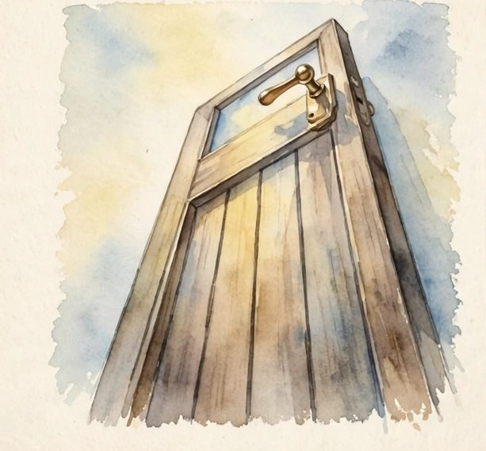
A brass door handle high on a tall door, seen from below.
The corridor now turns into the hall of scale, and its first room states the fact plainly: the world was large. Not large the way adults mean it, as a compliment to a garden or a complaint about a bill — large the way the sky is large, as a condition of existence. Tables were plateaus. Chairs were architecture. A doorway was a gate in a city wall, and the room beyond it was a province. The keeper moved through this immensity the way a field mouse moves through a cathedral: competently, unhurriedly, and without once supposing the building had been sized for someone else. It had not occurred to the keeper that the world might come in their size. It had not occurred to them that it should.
The house insists on the next sentence, because visitors keep trying to soften it: the largeness was not frightening. It was not anything, in the emotional sense — it was the medium, the way water is the medium to a fish, who has no opinion about wetness. Fear of scale belongs to later rooms, to keepers who have learned what can fall on them. The first room's keeper had a simpler physics: large things were the world's furniture, small things were the keeper's colleagues — the spoon, the cup, the cat — and the two populations met at the border of the keeper's reach, and without incident. If anything in the arrangement deserves the word, it is not fear. It is proportion: everything exactly as large as it was, the keeper as small, and the fit between them good.
Then the keeper grew, as keepers do, and the world — this is the part the house finds quietly astonishing — shrank. Not all at once: the table surrendered its plateau status across a single year; the gate became a door; the province became a room with a rug. The adult walks through the first room's country now and finds it charmingly small, a dollhouse of a world, and files the fragment's measurements under exaggeration. The house corrects the filing, firmly, in this room's margin: the measurements were exact. The surveyor was three feet tall, the instruments were eyes at the height of a table's edge, and the survey is the only one ever taken of the world at its true first size. Growth did not correct the record. It merely retired the surveyor.
38Adults Were Weather
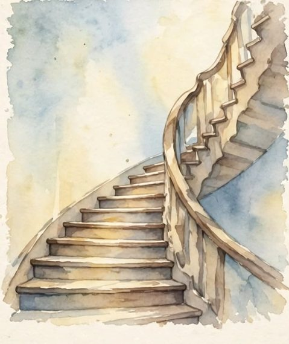
A staircase rising flight above flight like a mountain path.
In the keeper's first taxonomy of beings, the adults were not classified as people. People — the cat, the keeper, other small citizens — were one category. The adults were weather. They arrived in rooms the way fronts arrive over a coast: announced by sounds in the hall, preceded by a change in the light as their height crossed the doorway, and received, by everyone on the floor, as a condition to be read rather than a person to be addressed. A tall figure in a temper was a storm cell. The same figure with the kettle was a warm front and fair skies over the whole province. The keeper did not think less of them for this. Weather, to a three-year-old, is not a low category. It is the highest one: the powers that decide the day.
Weather is not negotiated with. This fact organized the keeper's diplomacy in the first room, and it was a diplomacy free of the corridor's exhaustions. You do not argue with rain; you read it, you dress for it, you wait out what cannot be dressed for, and you do not take it personally, because weather is not personal — the storm is not about you, and neither, the keeper understood, was the giant's bad afternoon. Later rooms would unlearn this at great cost, teaching the keeper to take every climate as a message and every message as a verdict. The first room's meteorology was wiser and it was free: fronts pass. That is what fronts do. The keeper's foreign policy fit on an index card: observe, shelter, wait, and do not confuse the sky with an opinion of you.
The taxonomy softened, of course. Down the corridor the giants acquired names, biographies, failings, jokes — became people, gloriously and inconveniently, with weather of their own that turned out to be as readable and as impersonal as the first room said. But the house notes that the original classification never fully retired. Grown keepers still enter a room and read its weather before they greet its people. They still know a household's climate from the sound of its door. They still, in the presence of certain tall figures — a boss, a beloved, anyone whose mood can change the day's forecast — feel the old meteorology stir: observe, shelter, wait. The adults are people now. The keeper loves them as people. But the first reading is still taken with the first instrument, and the instrument is a barometer.
39Door Handles Were High
The door handle was the first room's clearest piece of political architecture, and its message was simple: this far, unassisted, no further. The keeper could reach many things — the low shelf, the chair's rung, the border of the rug's country — but the handle hung in the giants' altitude, bright and indifferent, and every door in the house was therefore a border crossing rather than a passage. It is important to the house that this was not experienced as imprisonment. The keeper had no theory of doors. A door was a wall that sometimes, under giant management, opened; the handle was the management's insignia, no more resented than the moon is resented for its distance. Exclusion, to be felt as exclusion, requires a theory of entitlement. The keeper had a theory of altitude instead, and it explained everything.
Crossings, then, had their procedures, and the keeper knew them all. The first was lifting: raised by the weather, the keeper passed through doors at altitude, seeing the handle go by at eye level like a lighthouse. The second was asking — a word, a noise, a campaign conducted at the border until management responded. The third, rarest and most glorious, was the door left ajar: the border unguarded, the province beyond lying open at floor level, its wonders unpatrolled. Keepers remember the ajar doors of the first room the way sailors remember fair winds. And underneath the procedures ran the great consolation, noticed by no one at the time: the keeper was growing. Altitude was being issued, an inch at a time, on a schedule no one had to request.
The corridor's doors all open at the keeper's hand now, and the house is not sentimental about the change — reach is a good, and the keeper earned every inch of it. But something of the geography persists in the adult's sense of institutions: the high counter, the high office, the door whose handle is a title — the grown world kept the design, raising the keeper to meet it halfway and calling the arrangement normal. And on the day when the adult keeper stands before a door that will not open, in a building that was not sized for them, the oldest map in the archive stirs and offers its oldest, calmest reading: not a verdict on the keeper. A border. Borders are crossed by procedure, by patience, and by growing. The keeper has done all three before.
40The Stairs Were a Mountain Range
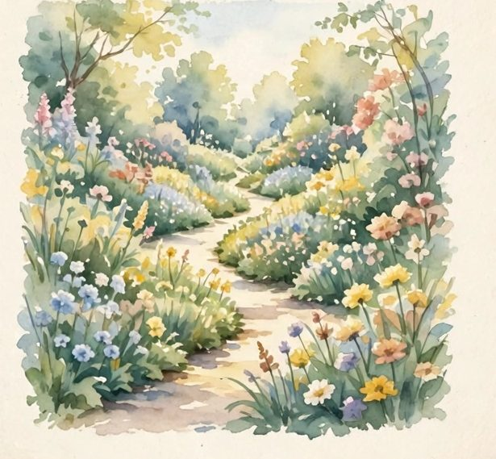
An enormous garden of flowers with a winding path running through it.
The stairs were the first room's mountain range, and the keeper's geography treats them with an expedition's respect. Each step was a ledge of a serious height — the full length of the keeper's leg, committed entirely, with nothing left over for the next. The landing was a plateau where expeditions regrouped. The banister, that polished spine the hands knew so well, served as the fixed rope: the route's one continuous handhold against the drop, which was real, and known to be real, in the way of all honest mountains. And the summit — the upper country, source of half the house's weather and most of its mysteries — lay at an altitude the keeper could visit but could not yet pronounce, let alone spell.
The techniques of the range were two, and the keeper mastered both. Ascent went on hands and knees, in the mountaineer's oldest posture, the body flat against the slope it intended to defeat, pausing at each ledge to confirm the conquest before attempting the next. Descent was the seated method: one ledge at a time, lowered with ceremony, the hands posted behind as anchors, the whole operation conducted at the pace of dignity rather than speed. Neither technique was taught. The range itself was the instructor, and its curriculum — commit fully, descend carefully, rest at the plateau without shame — has served the keeper on every slope since, including several that were not, strictly speaking, stairs.
Hall by hall, the corridor's surveys agree on very little, but they agree on this: the stairs were that big. Not in the adult's units — in the only units that were ever relevant, the keeper's own body, by which the first room was entirely measured. A step was one leg-length. A door was one impossibility. The world was one expanse, from the rug's border to the summit. Scale is the memory's truth, this hall teaches, and it is not a distortion to be corrected but a measurement to be honored: the range has shrunk since, because the surveyor grew, and the fragment keeps the original figures with a surveyor's pride. Somewhere in the keeper there is still a citizen for whom a staircase is a country, and every climb since has been, in part, a return.
41A Garden the Size of a Country
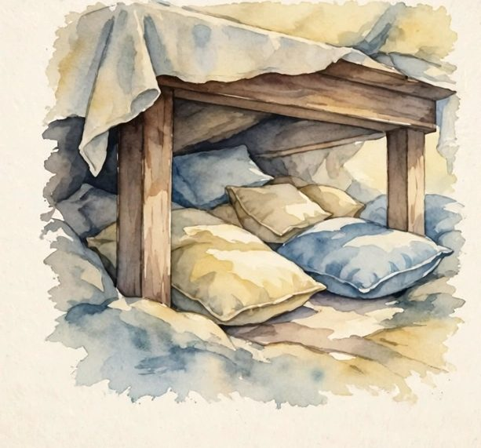
Cushions tucked beneath a large table, arranged like the furniture of a small, important cave.
The garden of the first years was not large by any measure the grown house would later accept. It had a path, a fence, some flowers that repeated themselves, and a corner where the grass grew with ambitions of its own. An adult could cross it in twenty paces, apologizing to the beds. But the keeper who lived at knee height crossed it the way travelers cross a country: in stages, with provisions, arriving at the far fence changed by the journey. Distances are not measured in steps. They are measured in how much world fits between here and there, and at three years old, the world is generously built.
Every country has its regions, and the garden had them all. There was the known province near the door, where the light fell first and everything had been visited a hundred times. There was the middle country of the path, with its traffic of ants and its weather of falling petals. And there was the far region by the fence, seldom traveled, where the plants grew taller than the keeper and the air smelled of somewhere else. To go there alone was an expedition. To be called back from there, by a voice from the house, was to be recalled from abroad — reluctantly, and with stories.
The strange part is not that the garden shrank. Gardens are allowed their later sizes. The strange part is visiting now and finding both gardens present at once: the twenty paces an adult measures, and the country the child crossed, laid over each other like two maps of the same place drawn by different centuries. The house keeps both surveys without choosing between them. The small one is not an error corrected by the large one. It is the record of a time when a fence was a border, a path was a road, and the far end of the garden was genuinely, honorably far.
42The Table Was a Roof
Beneath the table was the first architecture the keeper ever occupied on purpose. The top was a ceiling, the legs were pillars, and the space between them — shadowed, carpeted, out of the weather of the room — was a house inside the house, sized exactly to one small citizen. Adults saw furniture. The keeper saw a roof with rooms under it, and moved in without paperwork. Every childhood builds this dwelling somewhere: under a table, behind a curtain, inside the cave that cushions make when they are pushed together with intent. It is not hiding. It is the discovery that a person can choose a place and have it be theirs.
The light under a table is a particular light, and the first room keeps it faithfully. It comes in bars between the chair legs, stripes of the bright room laid across the dim one, and it makes the small space feel less like a hiding place than like late afternoon in a wood. Sounds arrive differently there, too — softened, as if the room above were speaking through water. Voices, footsteps, the clink of things being set down on the ceiling. The keeper listened to the household from underneath it, and the household, not knowing, performed its ordinary music for an audience of one.
Nobody teaches a child to go under the table, and nobody can later explain the full authority of the place. It may be the first experience of scale working in one's favor: the large world was built for giants, but this one corner was built, by accident, to measure. The keeper was its exact size. Under the table, for the first time, nothing was too high, nothing was too far, and the ceiling — kind, wooden, near — was at the proper distance above a head. The house remembers that feeling and measures every later shelter against it, usually without knowing it is measuring anything at all.
43Giants Who Meant Well
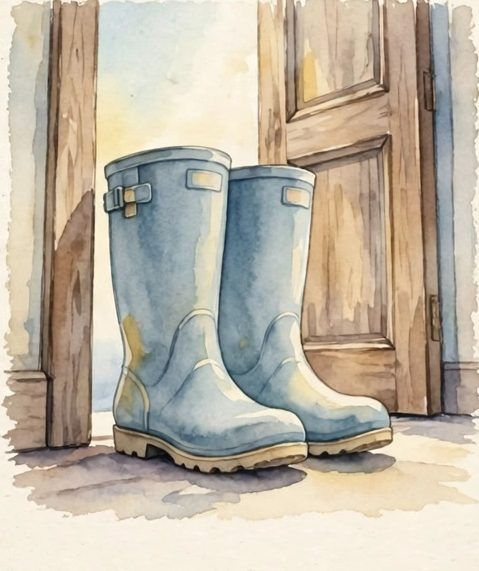
A pair of enormous boots standing by the door, waiting for their giant to come home.
The adults of the first years were giants, and the house declines to correct the record. They were tall the way weather is tall, they arrived with sounds before them — keys, steps, voices at doorway height — and their hands came down out of a bright altitude to lift, to steady, to offer. From the keeper's altitude, a face was something that happened at the top of a person, often against the light. What was clear at eye level was the middle world: hands, knees, the hems of coats, the great boots by the door that stood empty half the day like the parked equipment of some kind enormous machinery.
They meant well, the giants, and the fragment keeps that too. Meaning well was visible even from below: in the way a huge hand learned to be slow near a small head, in the way a voice that could fill a stairwell practiced being quiet at the level of a cot. The keeper did not have the words for any of this. The keeper had something better, which was the evidence, gathered daily and stored without commentary. Kindness, in the first room, is not a conclusion the child reached. It is the climate the memory still has when you open its door — mild, ordinary, and unmistakably somebody's doing.
Later, of course, the giants were measured and found to be of ordinary height, some of them not tall at all. The house allows the correction; it simply refuses to call the first measurement a mistake. A person who is three feet tall reporting that the people around them are enormous is not wrong. They are surveying honestly from where they stand, and the survey is the memory's truth. The boots by the door have shrunk in every photograph, but in the first room they keep their size, and so do the giants — large, mostly gentle, and moving carefully through a world whose smallest citizen they were trying not to startle.
44The Floor Was the First Country
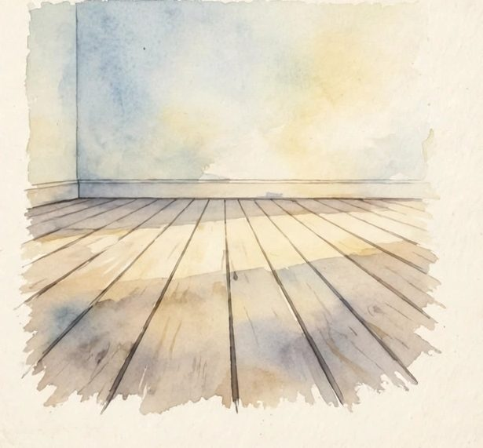
Floorboards running away to a far wall, a whole country laid out at crawling height.
Before the keeper owned a view, the keeper owned a floor. It was the first country: near, detailed, and entirely available. Its geography was boards and their gaps, the border of a rug, the sudden cool province of tile near a door. Distances there were honest — the far wall was far in the way a coast is far — and the journey across it, on hands and knees, was a real journey with weather of its own: dust in a shaft of sun, a lost crumb like a landmark, the shadow of furniture falling across the route like evening coming early to one valley.
The floor was also the first workplace and the first observatory. From it, the world was studied at the range where its details live: the grain of wood running like rivers in a map, the pattern of a carpet repeating its argument, the undersides of things that adults only ever saw from above. The keeper learned the country the way its natives do, by traveling it slowly and touching most of it. Much later, the house would be known from standing height, and known faster and shallower. The floor knowledge stayed underneath all of it, the way a first language stays underneath the later, politer ones.
This is why the earliest memories so often happen at ground level, and why the house trusts them there. The camera of the first years was set low because the keeper was low, and everything it recorded has the honesty of that angle: tabletops as horizons, chair legs as architecture, a dropped spoon as an event in the near distance. Nothing in these memories is looking down at the child. They are looking out, from the child, across the first country at its own true scale. To enter the first room properly, the corridor's visitors are advised to lower their expectations — literally, and by about three feet.
45Rooms Beyond the Door Were Abroad
The geography of the first years had a simple arrangement: the room you were in, and abroad. Abroad began at the door. Beyond it lay the other rooms, known by report and by sound — a kettle's rumor, a voice arriving without its person, footsteps that stopped, which was worse than footsteps that continued. The keeper's own room was the homeland, mapped and lit. The rest of the house was foreign territory, administered by giants, visited on expeditions and remembered afterward the way travelers remember capitals: partially, and with great confidence in the parts. A closed door was not an obstacle in those years. It was a border crossing with the guards invisible.
Sounds did the work of maps. The keeper learned the abroad by ear long before traveling it by foot: this clatter meant the kitchen, that creak meant the stairs, a certain door's particular complaint meant the room where the coats lived and the light was seldom turned on. Each room had its audible weather, and the small citizen lying in the homeland could read the whole house's morning from the sequence of its noises. It was a complete education in a real skill — knowing a place by listening to it — and it has never entirely been unlearned, only overlaid by eyesight's faster, shallower habits.
Growing up, in one of its quieter definitions, is the shrinking of abroad. One by one the foreign rooms were annexed: first visited, then known, then boring, until the whole house was homeland and the border had been pushed out to the street, then to the town, then off the edge of the map altogether. The first room preserves the older arrangement without mourning it. In there, the door is still a border, the corridor is still a journey, and the room beyond this one is still a country with its own weather — near, known by sound, and not yet, not ever quite, fully explored.
The First Room Desk
One desk receives all correspondence for this house — questions, corrections, and word of any first room: its patch of light, its tall doors, its two kept seconds, and how the walk back went. It is read in the order it arrives.
46Everything Had Not Been Named Yet
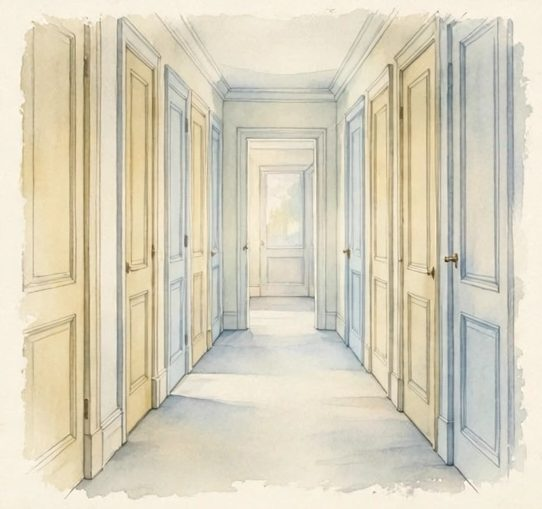
A hallway of tall closed doors, every one of them still waiting to be named.
In the first years, a great deal of the world arrived without its paperwork. Things had not all been issued with names yet — or rather, the names existed, in the giants' keeping, but they had not yet been handed down, and the keeper met most of the world the way travelers meet a coastline before the charts arrive: by its shape, its sound, its behavior in weather. A thing was what it did. The thing that hummed and was warm, the thing that opened and had stairs inside it, the tall cold thing that held the food. The descriptions were longer than names. They were also, in their way, more accurate.
Learning the names was a long annexation, and it went on for years, one word at a time, each one received like a small official gift. But the house asks the corridor's visitors to notice what a name costs. Before the kettle was a kettle, it was a presence: a voice, a warmth, a small weather system of its own that announced the morning. The name organizes all of that into a single handle, which is convenient, and quietly retires the rest. The first room keeps the pre-name world the way it keeps everything — without argument, and without insisting the old survey was better. It was simply earlier, and fuller in a different direction.
There are still pockets of it left, even in a grown life: the tool whose name escapes you and is, for a moment, pure function in the hand; the bird at the feeder that is, until the book is consulted, only itself. Those moments have the climate of the first room, and the house suspects the keeper recognizes them, faintly, as visits home. The named world is a fine country and the keeper is a loyal citizen of it. But the first room stands earlier than the census, and its keeper met the world the old way — uncounted, unnamed, and entirely, unmistakably there.
47Danger and Wonder Had the Same Face
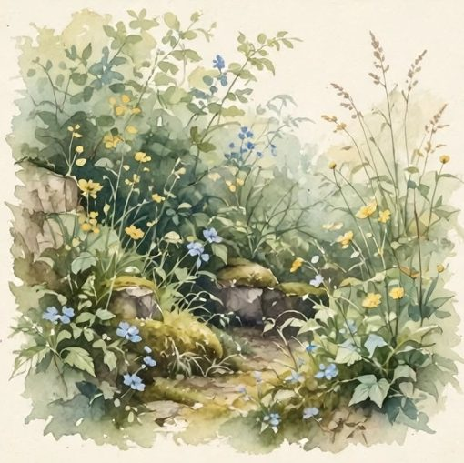
A wild, untouched corner of the garden, where everything interesting was possibly forbidden.
The machinery for telling danger from wonder had not been installed yet, and the first room preserves the world as it looked without it. The stairs were thrilling and perilous in one undivided impression. The deep end of the garden was where the adventure lived and also where one was called back from, in a tone that did not explain itself. Fire was beautiful, and its beauty was exactly the problem. The keeper stood before these things in a state the house can only describe as honest appraisal, not yet sorted into the two tidy columns of safe and unsafe that adult life keeps its accounts in.
This is not a claim that the child was wise about hazards — the giants handled the hazards, and the record of near-misses they quietly prevented is not the keeper's to tell. It is a claim about attention. Before the sorting, everything interesting arrived with the same face: bright, large, and worth approaching for a closer look. Wonder and alarm were one signal, meaning only attend, attend now. The world at that age does not come in categories. It comes in intensities. And the small keeper, who had nothing else to go by, went by intensity the way sailors go by weather, and was oftener right than the columns would predict.
The house does not propose unsorting a grown life; the columns earn their keep, and the keeper is fond of stairs that are only stairs. But the first room is allowed to remind the corridor of what the unsorted world felt like from inside it — a place where the flame, the stairway, and the deep garden all wore the same bright expression, and the day consisted of going toward things. Something of that survives in every later appetite for mountains, seas, and new cities, where danger and wonder still share a face and the old signal still says attend. The keeper learned to hear it early. It has been sounding ever since.
48Smallness Was Not a Problem
It must be said plainly, because the whole hall depends on it: the keeper was small, and it was not a problem. Smallness was the size of the citizen, not a defect in the citizen. Nothing in the first room is arranged around an apology for height. The world was large — that is the previous rooms' whole testimony — but a large world and a small person fit each other the way a sea fits a boat. The boat does not spend its days regretting the water. It rides it, rides it exactly, and learns the particular motion so well that the motion becomes indistinguishable from standing still.
The grown house tends to remember childhood smallness as a list of things that could not be reached, opened, or done, and the first room corrects the emphasis. What could not be reached was also, mostly, not yet required. What could be reached was a complete world with its own weather, and it asked everything of the keeper and got it. A step was a chair, a chair was a fortress, a floor was a country, and the distances were the distances of a full life. Proportion is relative to the citizen. By the keeper's own survey, nothing in those years was small at all — not the garden, not the days, and not the keeper.
The hall closes here, at the size the keeper actually was, and the house asks that the measurement be left as found. Later the corridor lengthens, the handles come down to the hand, the garden files its true dimensions, and all of it is fine and none of it is a correction. The first room does not compete with the later surveys. It simply keeps the oldest one: a world that was large because the world is large, and a keeper who was the right size for standing in it, because that is the size the keeper was. Smallness was the condition. It was never the problem. The problem, such as it was, had not been invented yet either.
49Tellings and Photographs
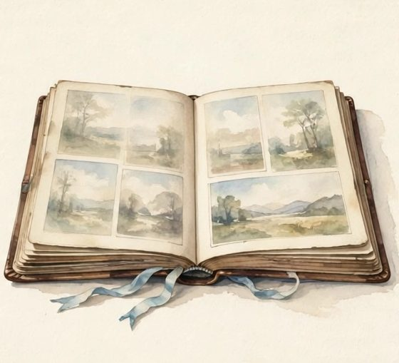
An old photograph album lying open, its pictures faded to the color of held breath.
The corridor now passes a different kind of room, and the light in it is mixed. Up to here, the house has kept what the senses stored: light, weight, weather, scale. But the earliest memory has more than one supplier, and honesty — this house's only real furniture policy — requires the other suppliers to be named. They are the tellings: the stories the family told about those years, at tables, over albums, until the stories moved in. And they are the photographs: flat, patient, official-looking witnesses that have been quietly editing the first room since before the keeper could read. This hall walks among them without suspicion and without surrender.
It would be tidier if the earliest memory were pure — dug from the keeper's own ground, owing nothing to anyone's narration. The house declines the tidiness. Almost nobody's first room is furnished so simply. Mixed in with the patch of light and the height of the table are whole scenes the keeper could not possibly have kept alone: the day described every birthday, the afternoon preserved in one much-shown print, the famous remark repeated until the repeater seems to remember saying it. The tellings did not sneak in. They were handed over, openly, by people who were keeping the same years from the other side of them.
So this hall keeps a register with two columns, and the columns are not enemies. In one: what the body stored, firsthand, at its own low altitude. In the other: what arrived by hand and by ear, on loan from the family's keeping, some of it worn so smooth by residence that it feels exactly like the first column's goods. The house labels the columns and then — this is the point of the whole hall — goes on living in the room anyway. A memory does not stop being yours because part of it was carried to you. Rooms are not less lived in for having been furnished by more than one pair of hands.
50The Photograph on the Wall of the Mind
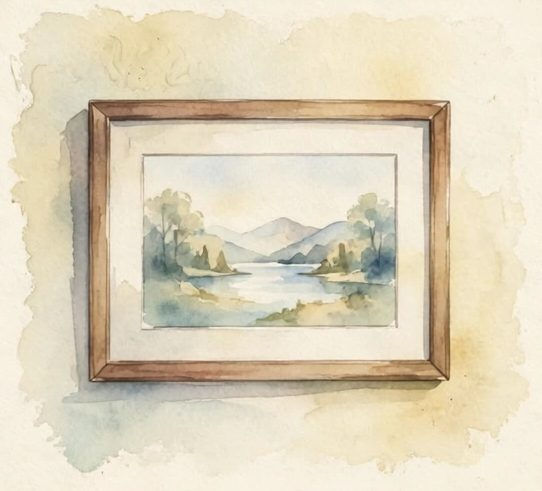
A framed photograph on the wall, its image gone soft and pale with years of being looked at.
Somewhere in the first room there hangs a picture that was never taken by the keeper's eyes. It is a photograph — an actual one, paper and frame, seen a hundred times in a hallway or an album — that has been promoted, by long acquaintance, into the memory itself. The keeper no longer visits the memory and then the photograph. The keeper visits the photograph, and it opens like a door. The small figure in it, in clothes the body cannot recall wearing, stands where the keeper's own recollection thins, and supplies the scene with a face, a season, a garden wall. It does this so helpfully that the substitution went unnoticed for decades.
The house keeps this picture where it hangs and declines to take it down. For one thing, it may be load-bearing: whole afternoons lean on it, and removing an image that has held a scene together for sixty years is demolition, not honesty. For another, the photograph is not lying. It really shows that garden, that wall, that child. What it cannot show is the inside of the moment — the temperature of it, its smell, what it felt like to be the small figure rather than to look at them. Those things, where they survive at all, survive in the body's older keeping, and the two records complete each other the way a map completes a journey.
What the corridor's visitor is asked to practice here is a small, exact courtesy: to know which wall of the mind the picture hangs on, and whose eyes it came through. The photograph is the family's witness, and a good one — patient, dated, indifferent to being believed. The fragment beside it is the keeper's own witness, older and harder to interview. Neither outranks the other. The earliest memory, honestly surveyed, is usually a room furnished by both, and the keeper who can say so — this part I lived, this part I was shown — is not poorer for the admission. The room is larger for having two doors.
51A Story Told So Often It Moved In
There is a scene in the first room that the keeper did not live, and it has the best furniture. It arrived the legal way, by ear, across a hundred tellings: the day the keeper, aged three, did the famous thing, said the famous sentence, caused the famous small catastrophe that the family has polished like a stone in a pocket ever since. The keeper can describe the scene in detail — the room it happened in, who was standing where, the weather of the telling itself. Ask where the description comes from, and the answer, given honestly, is that it comes from being told. The memory of the story and the story of the memory now share one address, and the post arrives for both.
Repetition is the mortar. A story told once is a visitor; told every year, at the same table, by voices that are themselves now part of the furniture, it stops visiting and takes up residence. Each telling lays the scene down again in fresh plaster, and the keeper, listening, walks through it so often that a path forms — and a path walked often enough feels exactly like a memory of walking it. This is not deceit, on anyone's part. The tellers are not forging the keeper's past. They are doing something older and kinder: they are keeping a small person's years in trust, in the only vault that was open at the time, which was their own remembering.
The house's ruling on the resident story is brief: let it stay. It lives in the first room because the first room is where it does its work — it carries the tone of the household, the family's own account of who the keeper was before the keeper could file reports, and the unmistakable evidence that the small citizen was watched, and found worth narrating, by the giants of the time. A person is partly made of the stories that were kept about them. The keeper who knows which scenes arrived by ear, and keeps them anyway, labeled and loved, is not confusing the record. The keeper is reading it correctly, footnotes included.
52Which Part Is Yours?
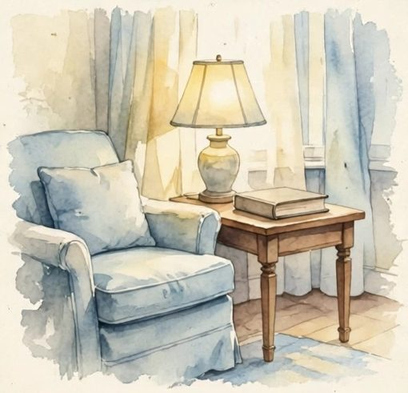
A reading chair beside a lamp, the book closed, while the household does its remembering out loud.
It is the question this hall exists to make askable, and the house insists it be asked in a friendly tone of voice. Which part is yours? Not as an audit, not as an eviction notice — as a surveyor's courtesy, the kind a person pays their own past when they finally walk it with a lamp. Take the earliest scene you have and go through it slowly. This light on the floor: mine, the body kept it. This dialogue, word-perfect, in a voice not your own: the family's, delivered by ear across thirty years. This garden wall: the photograph's. This warmth, unaccountable and complete: mine again, older than everything.
The sorting, done kindly, surprises most keepers in the same way: less is lost than feared. An earliest memory is rarely found to be all borrowed, the way a house is rarely found to be all borrowed furniture. Underneath the tellings there is nearly always a floor of the keeper's own — a sensation too odd and unglamorous ever to have been narrated into anyone, a patch of light no story would bother to invent. The tellings furnished the rooms, but the body chose the house. And the choosing itself, the way the small keeper held on to this fragment and let a thousand others go, may be the most personal thing in the whole first room.
The question has a second use, gentler than the first. Asked of the family's version, it returns property that tellings sometimes quietly annex: the scene where the keeper is reported to have felt one thing, while the fragment, consulted privately, reports another. Both can stand. The family's scene is theirs, the keeper's footnote is the keeper's, and the first room is large enough for a chair beside the official portrait. Which part is yours is not a challenge to the past. It is the past being given back its several owners, each thanked, each believed in the measure of what they actually carried.
53The Family Version
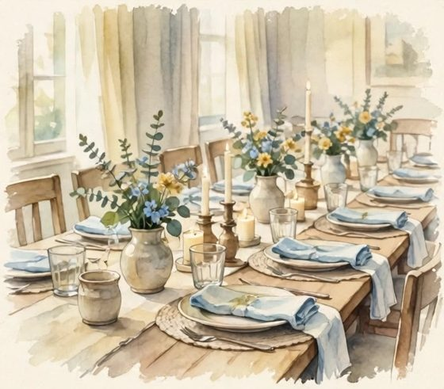
A long family table set for many, where the earliest years are served along with everything else.
Every family keeps an official edition of the keeper's first years, and it is a genuinely edited volume. It has chapters — the famous day, the great escape, the sentence that has been quoted at every birthday since — and it has omissions, where the editors, who were tired and human and there, let the record rest. The family version is not propaganda. It is closer to a harbor chart, drawn by the people who sailed those waters daily, marking the channels they remember because those were the channels they steered by. A chart is not the sea. But only a fool crosses without one, and only a different kind of fool mistakes it for the water.
The keeper grew up inside the family version the way a fish grows up inside its river, largely unaware there was water. It supplied the first years with narrative the way the room supplied them with light. Only later, walking the corridor backward with a lamp of one's own, does a person notice the joinery: here a scene is the family's telling, here it is the body's fragment, here the two have been married so long that separating them would be an act of vandalism against both. The house does not recommend the separation. It recommends knowing that the joinery exists — the way you know a good table is joined, which makes you trust it more, not less.
There is gratitude due in this room, and the house pays it on the record. The family's version, whatever its edits, is the reason there is a version at all. Left to the keeper alone, the first years would be a patch of light and the height of a table — true, and nearly mute. The tellers gave those years their plot, their cast, their famous sentences, and handed the whole manuscript over, free of charge, at every table for decades. A keeper may annotate it. A keeper may footnote it from the fragment's older evidence. But the house suggests the annotation be done in pencil, and in the margin, and with thanks.
54An Inherited Memory Is Still a Room You Live In
Some inheritances arrive without ceremony: a way of holding a cup, a fear of deep water, a scene from the age of three that came down through the family telling and took up residence as if it had always been the keeper's own. The house has a word for that scene, and the word is not fake, and it is not borrowed, exactly. It is inherited — and inheritance, in every other department of a life, is understood to be real property. A house inherited is a house. Money inherited is money. A memory handed down in good faith, and lived in for sixty years, does not remain someone else's because of how it arrived.
The proof of residence is wear. An inherited memory acquires the keeper's own patina the way an inherited chair takes the shape of its new sitter: the telling smooths here, a detail the keeper actually lived gets quietly set into the inherited frame there, until the two timbers are indistinguishable and asking which is original becomes a question for specialists, not residents. This mixing is not contamination. It is what living in a thing does to it. The keeper did not merely receive the memory and store it. The keeper furnished it, repaired it, received guests in it, told it onward. Sixty years of tenancy is not a footnote to ownership. In this house, it is the substance of it.
So the house enters the inherited scenes in the register with full rights and no asterisk. They may be visited, loved, told at tables, cried over if the keeper is so moved, exactly like the scenes the body recorded alone. The only duty that comes with them is the one this whole hall has been describing: honesty about the conveyance, offered without apology. This one came to me; I have lived in it since; it is mine the way anything tended for a lifetime is mine. That is not a lesser kind of mine. For most of what a person keeps, in the end, it is the only kind there is.
55The Photograph Corrects, and Also Invents
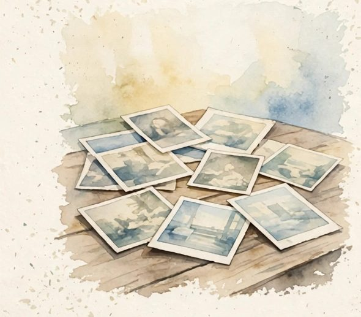
Faded photographs spread on a table face up, each one quietly sure of its own version.
Lay the photograph beside the fragment and the photograph wins the first argument, because it brought evidence. Here is the garden wall, it says. Here is the dress, the season, the dog whose existence the keeper had privately begun to doubt. Memory, corrected, feels a small shock of gratitude — and then, if the keeper is paying attention, a second, quieter shock. Because the photograph has not only confirmed the scene. It has edited it. The keeper now remembers the wall as the photograph shows it, from the photograph's angle, in the photograph's weather, and the older view — from lower down, from inside the day — has stepped politely aside.
This is the photograph's double nature, and the house records it without resentment: it corrects, and it also invents. It corrects the record of what the world looked like, which the keeper's fragment holds only sketchily. It invents the record of what the moment was, which it cannot possibly hold at all. A photograph of the birthday proves the cake and the candles and arranges them into the birthday — and afterward, the keeper's own recollection of noise and heat and wanting the largest slice files itself under the photograph's tidy composition. The invention is not a lie. It is a frame doing what frames do: choosing edges, and letting the rest of the day go.
The keeper's mature arrangement with photographs is therefore a treaty, and its terms are simple. The photograph is believed about surfaces. The fragment is believed about weather. When the two disagree — when the print shows a smiling row and the body remembers a long, hot wait before the smiling — both are entered in the register, and neither is required to withdraw. A life is not poorer for having two witnesses who saw different halves of the same afternoon. It is poorer only when one witness, usually the flatter and more confident one, is allowed to testify alone. The house keeps both in the room, and the room is truer for the argument.
56Borrowed Footage, Honestly Labeled
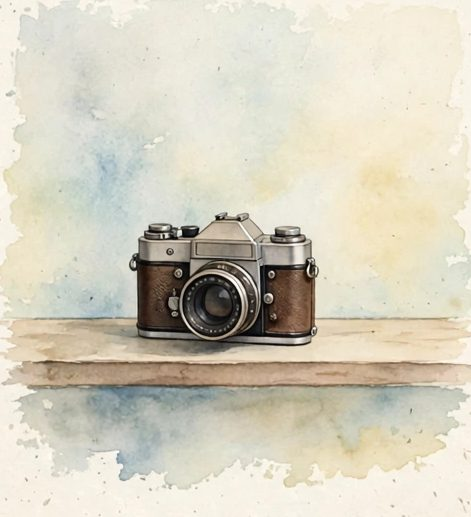
An old camera resting on a shelf, retired from service and entitled to its opinions.
This room is the hall's registry office, and its entire business is one small ceremony: the labeling. The house does not hide its borrowed footage in a back drawer, and it does not project it without a title card either. It simply keeps, for each scene, a note of where the scene was shot. This reel the body filmed. This reel was the family's, shot from adult height, handed down with love. This still is a photograph's. The labels are written in the same ink as the rest of the register. They are not warnings. They are provenance — the same courtesy a museum pays a painting, and for the same reason: a thing is more itself, not less, when you know how it came to hang where it hangs.
What the labeling prevents is a particular, avoidable sorrow: the keeper, late in life, discovering the borrowed reel by accident and feeling the whole first room shake. A scene found unlabeled feels like a forgery when its sources come out. A scene labeled from the start feels like what it is — a collaboration, entered into openly, between the small keeper who lived the years and the tall keepers who narrated them. Nothing in the room changes when the label is added. The footage is the same footage. What changes is the keeper's footing in it: from tenant of a possibly false address to resident of a known one, with the deeds honestly describing the property.
Note what the label does not say. It does not say secondhand, or lesser, or pending verification. Some of the borrowed reels are the finest footage in the room — shot by witnesses who loved the subject, preserved with a care the small keeper, busy being three, could not have managed. The body's own reels are not automatically the truer ones; they are merely the local ones. The house's whole position fits on the registry office's one small plaque: origin is information, not rank. The keeper who labels the footage honestly loses nothing but a fiction nobody needed — the fiction of the single camera. What actually happened in that house was filmed, as all childhoods are, by everyone present.
57The Seam Between Lived and Told
Run a finger slowly along the earliest memory and somewhere, usually, the texture changes. One stretch is lived: dense, sensory, oddly specific, a fabric the body wove at ground level in real time. The next stretch is told: smoother, better lit, with dialogue — the weave of a story that has been handled by many hands and improved in the handling. The join between them is the seam, and the house directs the corridor's attention to it, not because the seam is a flaw, but because it is the most instructive square inch in the room. Everything this hall believes can be read off that one join: two materials, two makers, one garment.
A seam is not a tear, and the house wishes the distinction entered in the register in a firm hand. A tear is damage; a seam is construction. Nothing in the earliest memory was ever one unbroken cloth, because the years themselves were not one unbroken cloth — they were lived by a child and narrated by a family simultaneously, from the first day, in the same house, at the same table. The memory simply preserves the joint the life was built with. To find the seam, then, is not to catch the memory out. It is to find the place where two kinds of keeping meet, and to be able to say, with the finger still resting on it: here the hands changed.
Well-made seams do not apologize, and they do not hide. They are worked in a thread chosen for the purpose, and they are, if anything, the strongest part of the garment — the place where the maker admitted the shape of the thing and joined it honestly. The house proposes that a keeper treat the seam in the earliest memory the same way: not picked at, not covered over, not explained to visitors unless they ask. Just known. A person who knows where their first room's seam runs walks in it more comfortably than one who still believes in the seamless cloth, and startles less, late in life, at the honest evidence of other hands.
58Nobody Is Accused of Forgery
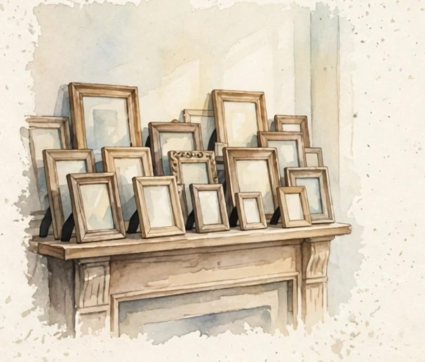
A mantel crowded with framed pictures, the whole family standing witness in several sizes.
Let the record of this hall show a formal acquittal. The tellers stand accused of nothing. The photographers stand accused of nothing. For most of the hall's history in these rooms, the keeper has been describing a transfer of property so common that refusing it a name would be the only real dishonesty — and yet people speak of their inherited scenes the way one confesses a small crime, in a lowered voice, as if the family's narration were a contamination and the photograph a planted clue. The house rejects the courtroom. Nobody forged anything. What happened in that house was the ordinary manufacture of a childhood, carried out by everyone in it, with the tools that were at hand.
Forgery requires an intent to deceive, and the register finds the opposite intent at every point of the evidence. The story was told to include the keeper, not to mislead them — to hand a small person the plot of their own first act, which the small person, being three, had neglected to write down. The photograph was taken to keep the day, not to replace it. If the keeper later built on these gifts, furnished the bare fragment with the family's narration and the album's faces, that is construction, not counterfeiting, and every adult alive is standing in a building made of exactly the same materials. The prosecution has no case, and it costs the house nothing to say so plainly.
The acquittal matters because suspicion, once admitted, does not stay in its room. A keeper who begins by doubting the tellings ends by doubting the fragment, and then the light on the floor is cross-examined, and then the whole first room is lit like an interrogation cell and nobody wants to visit it anymore. The house has seen that renovation and does not permit it. Trust, in these rooms, is not naivety. It is the deliberate, adult decision to take the whole inheritance — the body's reel, the family's reels, the album's stills — as goods delivered in good faith by people doing their best in a house where a small citizen was being, among other things, loved on the record.
59The Telling Is Part of the Childhood, Too
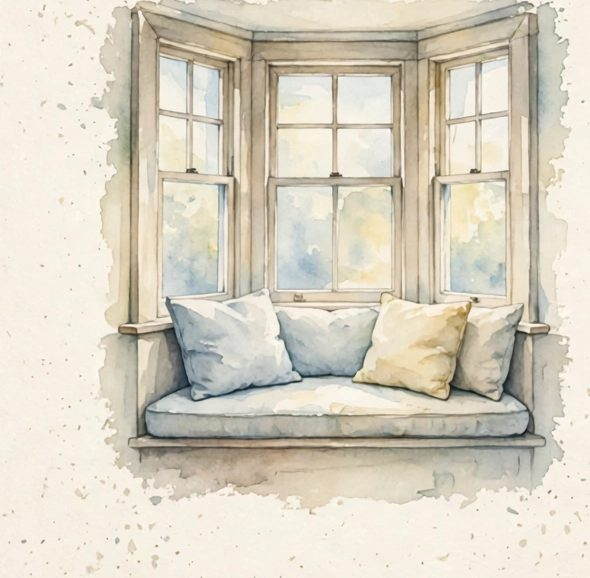
A bay window with cushions, unchanged for years, where the stories were always told.
It is time to promote the telling from supplier to resident. The stories about the first years were not delivered from outside the childhood, like weather reports from a neighboring country. They were told inside it and after it, at its own tables, by its own giants, in the evenings of the same house — which makes them events of the childhood's long afternoon, as much a part of the era as the garden or the stairs. The keeper did not only live the first years once, in real time, at three feet tall. The keeper lived them again, yearly, at the table, growing up inside the narration like a plant inside a trellis. The trellis is part of the plant's story. It could hardly be otherwise.
Consider what the tellings actually gave the keeper, beyond scenes. They gave the keeper a self with a past tense. The fragment alone, for all its sensory truth, cannot say who anyone was, or why the day mattered, or that the small figure in the garden was loved in advance of doing anything lovable. The story supplies the meaning the way the photograph supplies the faces. It tells the keeper: you were watched, you were narrated, your smallest doings were entered in the household record and read aloud with pride. A childhood partly consists of being told it happened. The house declines to treat that as a lesser way of having one.
So the register closes this room with the telling seated at the table, not standing at the door with its hat in its hands. It belongs in the childhood's census alongside the light and the floorboards and the giant weather — different in kind, equal in citizenship. The keeper's earliest years were made of two weathers that cannot be separated retroactively: the weather of living them, and the weather of hearing them told, year after year, until the hearing was itself a way of having lived. The first room holds both weathers under one roof. That is not a flaw in the room's construction. That is the construction.
60What No Photograph Holds
The hall ends with the negative space, because that is where the keeper's own property mostly lives. No photograph holds the temperature of the day — the particular warmth of sun on a floor where a small citizen sat, which the body recorded without being asked and has kept without being thanked. No photograph holds the sound the house made as it settled into evening, or the smell of the kitchen at the exact hour the light went amber, or the weight of being lifted, which is perhaps the first fact the keeper ever knew and the one the album is most silent about. The camera kept the surfaces. The rest stayed with the tenant.
This is the balance the whole hall has been walking toward, and it is a comfortable one. The tellings and the photographs enlarged the first room; the body furnished its oldest corner with goods no one else could supply. Neither holding makes the other unnecessary, and the keeper is not required to choose a favorite witness. Indeed, the house notes a certain justice in the arrangement: the family's evidence is the kind that can be shown, passed hand to hand, pointed at across a table. The keeper's evidence is the kind that can only be inhabited. Both are real. Only one of them can be framed, and it is not the one the keeper lives in.
The corridor goes on from here toward the small keeper who did the living, and the house lets this hall close with a plain inventory. What the photographs hold: the faces, the surfaces, the proof. What the tellings hold: the plot, the cast, the famous sentences. What neither holds: the warmth, the sound, the smell, the altitude, the whole interior weather of being three in that house on that day. Those unphotographable goods are the keeper's sole and entire estate, unrecorded anywhere else in the world. The album cannot lose them. The tellers cannot edit them. They are held in the only vault that was ever fireproof, which is the body, and they are open for visiting whenever the corridor is walked.
The First Room Desk
One desk receives all correspondence for this house — questions, corrections, and word of any first room: its patch of light, its tall doors, its two kept seconds, and how the walk back went. It is read in the order it arrives.
61The Child Who Keeps It
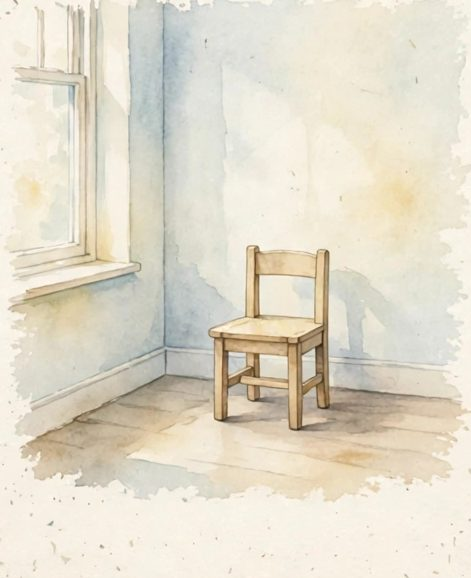
A small chair stands alone in a bright room, at the height of the keeper who used it.
Every house in this long corridor has its keeper, and the first room has the smallest of them. The earliest memory was not filed by an archivist or guarded by an adult with a system. It was kept by a child of three, or four, or five, who had no idea that keeping was among their duties, and who performed it the way breathing is performed — by living in the room while it was still the whole address. When we walk the corridor now, decades later, and find the first room intact, we are meeting the work of the smallest staff member the house has ever employed, still on duty after all these years.
The child kept the room the only way children keep anything: by paying a kind of attention that adults have forgotten how to afford. Nothing was labeled, nothing was dated, nothing was summarized for later use. The light was noticed because the light was there. The table edge was remembered because it was at eye level, and the voice from the other room because it was the sound the world made when all was well. It is a keeping without method, and the house has learned to trust it more than any archive assembled later, because method edits, and the child had not yet learned to edit at all.
So the first room belongs, in the plainest sense, to that child still. The adult who visits it now is a guest in someone else's keeping, and the rules of the visit follow from that. You do not rearrange a keeper's shelves to suit the current management. You do not complain that the records are kept in sunlight instead of ink. You stand in the doorway, you look at what the small keeper saved, and you remember that everything later in the corridor — every dated, labeled, carefully documented year — rests on the foundation of this one room, kept faithfully by somebody who could not yet tie their own shoes.
62The Child Did Not Know It Was Keeping Anything
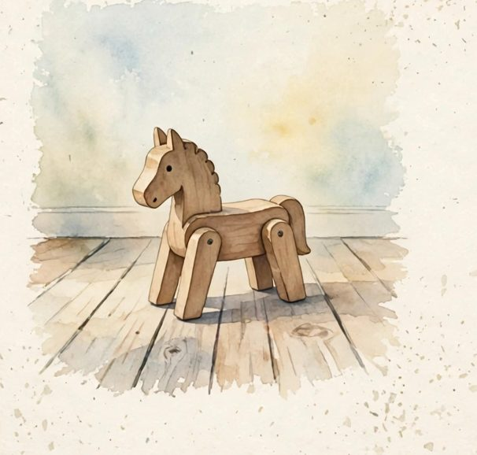
A toy wooden horse stands on floorboards, left exactly where the game ended.
There was no ceremony on the day the keeping began, because the keeper did not know that anything was being kept. The child in the first room was not composing a memoir or storing evidence for a future self. The child was busy — with the serious business of a morning, a floor, a toy, a patch of sun — and the memory formed the way a footprint forms: not by decision, but by weight and presence. Everything in the room was simply happening, at full size and full importance, and some of it, by the ordinary chemistry of a lived moment, stayed.
This is why the first room has the honesty it has. A keeper who does not know they are keeping cannot perform for the record. Nothing in the earliest memory was selected because it would look well in the telling, or because it proved anything about the family, or because it was the kind of moment adults approve of. The proportions are a child's proportions, assigned by a child's attention: the doorknob enormous and still vivid, the occasion that adults would have called important entirely absent, the afternoon unrecorded and the two seconds beside the window kept like treasure. The accounts were never cooked, because no accounts were being kept.
And because the keeping was unknown, it was also complete in its own way. The child did not separate the day into the memorable and the disposable; the light, the voices, the height of things all went in together, equally welcome. Later keepers — the schoolchild, the teenager, the adult — would learn to sort, and sorting always loses something. The first room predates the sorting. That is its poverty, by the standards of the archive: no dates, no sequence, no names attached to the faces. And it is also its wealth, because what was saved was saved whole, at the size it was lived, before anyone thought to ask whether it was worth saving at all.
63A Keeper Without a Ledger
The keeping of the first room was done without a ledger. No dates were entered, no names recorded in a fair hand, no index compiled at the back for future reference. If the adult who walks the corridor now goes looking for the paperwork of their own beginning, they will find the desk empty and the drawers unlined, and they may feel, for a moment, that the keeping was careless. It was not careless. It was a different kind of record altogether — kept in the body and the senses rather than on paper, in a hand that had not yet learned to write.
A ledger is a fine instrument, and the later corridor is full of them: school years with terms, houses with addresses, the long shelf of who and when. But the ledger's virtues are also its limits. It records what can be spelled. The first keeper had access to an older filing system, in which a smell is a complete document, a warmth is a certificate, and the sound of dishes from the next room is a signed statement that the world was in order. None of these entries can be photocopied. None of them can be subpoenaed into a clearer form. They can only be visited, the way the room itself is visited: quietly, and on its own terms.
So the house does not fault the keeper for the missing book. A ledger would have required the one thing the first room could not supply: a keeper standing outside the moment, observing it, instead of a keeper inside the moment, living it at floor level. The record we have is the record of someone who was entirely present, and presence and paperwork have never been close friends. When the corridor's later clerks complain that the first room is undocumented, the house answers mildly that it is documented the way dawn is documented — not in a register, but in the fact that everything after it happens in its light.
64What That Child Noticed First
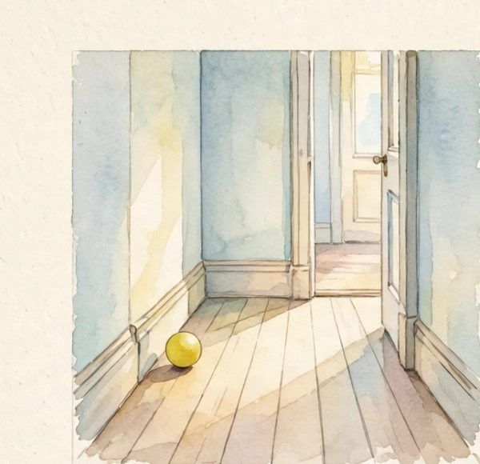
A ball rests in a corridor, exactly where the noticing stopped.
It is worth asking, standing in the first room, what the keeper noticed first — because the answer describes the original staff of the memory better than any later inventory. Not the occasion. Not the assembled family, or the reason for the day, or whatever the adults considered the point of the proceedings. The child noticed what was at child height and moving at child speed: the light arriving, the ball at rest, the hem of a dress, the dog's enormous patience, the interesting crack in the path. The world's headlines were overhead, out of frame. Down at floor level, the news was texture, warmth, and things that rolled.
This order of noticing was not a failure of attention; it was attention before it learned manners. The child had not yet been taught which things count as important, so importance was assigned by nearness, brightness, and kindness. A face bending down out of the light could outweigh a whole ceremony. A spoon catching the sun could hold the room's whole significance for a full minute. The house keeps this scale of values on file without embarrassment, because it explains the first room's contents perfectly: nothing in it is trivial, because the keeper had not yet acquired the very idea of trivial.
Adults returning to the room sometimes try to correct the proportions — to promote the occasion and demote the ball, to straighten the child's accounts into adult order. The house advises against the edit. The noticing is the record; to revise what the child noticed first is to falsify the only minutes the room actually holds. Besides, the child's scale has a way of being vindicated by the long view. The ceremonies are all forgotten now, every one of them, by everyone who attended. The light on the floor is still there, still exact, still doing its work at the far end of the corridor.
65What That Child Was Not Worried About
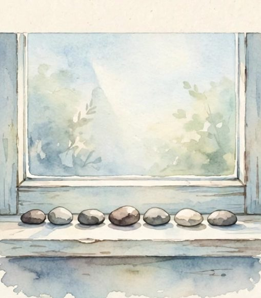
A row of pebbles is arranged on a windowsill, in an order that mattered.
The catalogue of what the child in the first room was not worried about is long, and reading it is a rest for any adult heart. The child was not worried about time, which had not yet begun to behave like money. Not about the opinion of the room, which had not yet become a court. Not about the future, which was not a project but a rumor, and a friendly one. Not about whether the day was being used well. The pebbles were being arranged on the sill in an order that mattered, and the arrangement was the whole of the law.
It would be easy to call this ignorance, and the house declines to. Ignorance is a lack where something is owed; nothing was owed. The child had not been issued the adult list of concerns, and the absence of the list was not a gap in the child but a fact about the age of the keeper. Worries, like door handles, were installed at a height the child could not yet reach, and the house counts that arrangement among the mercies of the architecture. The first room is quiet partly because none of the corridor's later noise had been let in yet.
None of this makes the first room a paradise, and the house is careful not to gild it. The child had the child's own weather: sudden griefs, large fears of small things, the end of the world arriving regularly at bedtime. But the worries were weather, not climate. They passed through the room and out again, leaving no files behind. What the keeper was not worried about stayed unwritten, and that blank space is one of the room's real contents — a kind of silence the adult walking the corridor can still hear, standing in the doorway, beneath the light and the voices.
66The Child Trusted the Room
The first room ran on trust the way other rooms run on wiring — invisibly, and underneath everything. The child did not test the floor before standing on it, or audit the voices before believing them, or keep one hand on the door in case the world turned out to be unreliable. The world was presumed sound, not from evidence but from a complete absence of counter-evidence, and the presumption held for years. Everything the keeper saved was saved inside that presumption, which is why the room feels the way it does: lit, level, and entered without precautions, by someone who had never once been given a reason to knock.
It would be a mistake to call this trust naive, because at the child's scale it was simply accurate. The room, in fact, was being kept — by the giants overhead, whose weather the child read the way sailors read a sky: constantly, instinctively, and mostly without alarm. Food arrived. Arms arrived. The light came back every morning in the same window. A keeper whose entire sample of the universe reports order is not foolish for concluding order; the conclusion fits the data of the first years better than suspicion would. Suspicion is a tool for a larger world, and it would be issued later, along with the longer corridor.
The house is careful, on this point, to protect the trust from hindsight. Later rooms in the corridor have their own weather, and some of it taught the keeper wariness, and the wariness was earned and is not argued with here. But the first room is not to be retroactively patrolled. What the child trusted, the child trusted inside a world that was, at floor level, being faithfully kept; the feeling in the room is evidence of that keeping and of nothing discreditable. To visit the first room properly is to stand for a moment inside the presumption again — the floor solid, the voices kind, the day unguarded — and to let it be true while you are there.
67No Review Was Written
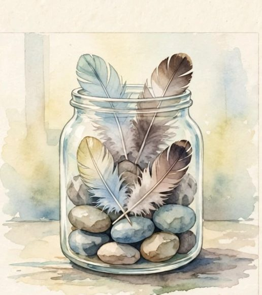
A jar of collected feathers and stones stands on a shelf, unjudged and complete.
No review of the first room was ever written, and the omission is one of its great protections. The child did not come away from those mornings with a verdict. There was no assessment at bedtime, no marks awarded to the day, no paragraph composed for the family's consideration about how the summer was going. The jar on the shelf accumulated feathers and stones without a catalog, and the days accumulated in the same spirit: kept, not appraised. Everything in the room survives unrated, which is a condition almost nothing later in the corridor manages to achieve.
The corridor's later keepers are all reviewers. It is the habit of the grown house: every season graded as it closes, every room of life summarized in a sentence — a good year, a lost year, a happy childhood, or its opposite, pronounced like a judgment over the whole archive. The house asks that this machinery be left in the corridor, outside the first room's door. The room predates it. To grade the small keeper's tenure is to apply a standard invented decades later to a morning that was lived before standards, and the result, whether favorable or damning, is equally false to the light in which the pebbles were arranged.
Because no review was written, the room has never been reduced to its summary, and summaries are how houses lose rooms. A childhood pronounced upon in one sentence becomes that sentence, and the light, the jar, the pebbles, the ball in the corridor are quietly evicted to make way for the verdict. The first room escaped that fate because its keeper never filed the sentence. What remains is not a position on a childhood but the thing itself, in pieces: two seconds of summer, a height of table edge, a voice. The house guards the absence of the review as carefully as it guards the fragments. Some rooms should stay unreviewed, and the first one most of all.
68The Child's Priorities Were Correct
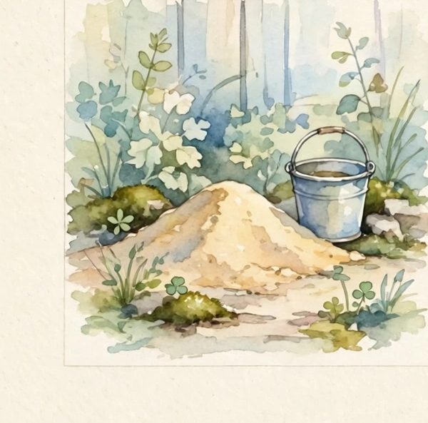
A small pile of sand and a bucket wait in a garden, at the center of the day's work.
The grown corridor has a standing joke about the small keeper's priorities, and it is time the house corrected the record on the keeper's behalf. The child put the puddle above the parade, the spoon's bright flash above the ceremony it belonged to, the dog above several distinguished visitors. The adult world calls this ordering charming and wrong — a rough draft of the true scale, to be revised by schooling. The house files a dissent. Judged by what actually lasted, the child's scale was the accurate one. The parade is unrecoverable. The puddle, given the right afternoon light, is still there, holding the sky exactly as it did.
There is a second sense in which the priorities hold up. The child's scale measured things by nearness, warmth, and response — by whether they were alive to the touch and glad of the attention. The adult scale that replaced it measures largely by witness and rank: what was seen, what was said of it, where it stands among other people's occasions. Set side by side in the corridor's long light, the first metric does not disgrace itself. The keeper at three was loyal to what was actually present, and presence, as the whole house has since learned at some cost, is the scarcest currency in any room.
None of this asks the adult to resume the child's scale for the conduct of a grown life; the corridor has its own business now, and its own scales, and they serve it well enough. The claim is narrower and is made plainly: the small keeper's priorities were correct — for that room, at that height, with that evidence — and the house will no longer list them among the charming errors of the early years. The sand pile was a morning's whole work and was finished. The pebbles were placed in the right order. The keeper's accounts, such as they were, balance.
69Wonder Was the Default Setting
In the first room, wonder was not an achievement; it was the default setting, the condition the equipment arrived in. Nothing had yet been seen twice. The kettle had not become merely a kettle, nor the staircase merely the way upstairs. Each thing kept its first-day brightness because each thing, for the keeper, genuinely was having its first day. Astonishment did not have to be arranged by travel or occasion; it was issued with the morning, standard, like light through the curtain. The house notes the setting without envy — it could not have been otherwise, and it did not last, and it was never meant to.
This is the explanation for the first room's famous brightness, which visitors sometimes suspect of being retouched. It is not retouching; it is the original exposure. The child recorded the world at wonder's resolution, where an ordinary morning is developed in full color and a dishpan of water can hold a weather system. Later keepers turned the setting down to save effort, the way one dims a lamp, and their records are correspondingly reasonable and grey. Neither exposure is a lie. But the house keeps the first room's plates exactly as they were taken, and will not have them corrected toward the corridor's more sober average.
The page does not propose that the adult restore the setting. A dial returned by effort is not the original dial, and the house has no method to sell for wondering on purpose. What the first room offers is plainer: a record that the world was once met this way, by this very keeper, in a room that is still standing. Sometimes, standing in the doorway, the adult notices the curtain doing its old trick with the light, and for the length of a breath the corridor's dimmer settings are forgotten. The house does not build on the moment. It simply keeps the room where such moments remain possible.
70The Child Is Not a Witness for the Prosecution
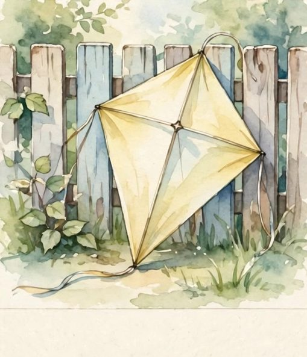
A kite rests against a fence, its evidence nothing but wind and color.
The house serves notice, in this room, of a refusal. Sooner or later, in most lives, someone attempts to call the small keeper as a witness — to have the child in the first room testify, from the fragment, about the whole childhood: whether the house was happy, whether the giants were kind, whether the record shows fault and whose. The adult keeper is pressed to put the child on the stand, and the fragment is pressed into service as evidence. The house declines the summons on the keeper's behalf. The child was keeping a room. The child was never gathering a case.
The refusal is not only a courtesy; it is also a fact about the evidence. The first room holds two seconds of summer and the height of a table. Such exhibits cannot convict a decade, and they cannot acquit one either. A patch of light is not a verdict on a family, in either direction, and the house will not pretend otherwise for the prosecution or the defense. The child is therefore excused from both tables. Let the giants be remembered by the whole corridor, in full sentences, by grown witnesses speaking for themselves — not by a keeper of three, subpoenaed out of the sunlight.
What remains, once the summons is refused, is a better office for the small keeper: not witness but host. The child holds the room, and the adult is received in it, and the terms of the visit are looking, not interrogation. There is plenty in the corridor that can be testified about honestly, by the parts of the house old enough to have understood it at the time; the record of a life is long and mostly grown. The first room is struck from the evidence list with gratitude. Its keeper is three, or four, or five, and is busy with the pebbles, and the court — the house is firm — is adjourned.
71Speak to the Keeper Kindly
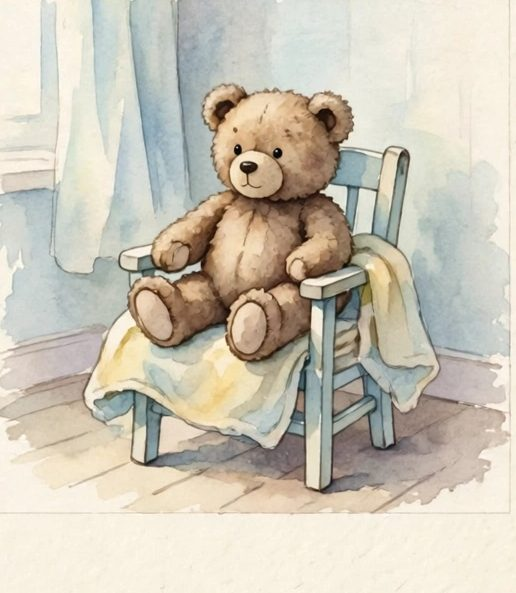
A teddy bear sits in a chair, waiting to be spoken to in the right tone.
There is a tone the house requires in this part of the corridor, and it is posted here, at the door of the last rooms of the hall, where the keeper is smallest. Speak to the keeper kindly. The adult world has other tones available for the child it once was: the amused tone, the embarrassed tone, the tone of the anecdote told at the child's expense for the table's laughter. The house has heard them all in the corridor and has ruled on them. The small keeper is the youngest employee this life has ever had, and is still, in a manner of speaking, on the premises.
Kindly does not mean sentimentally, and the house is not asking for a ceremony of tenderness at the door. It means the ordinary respect owed to any keeper for work done in good faith with the tools of their time. No scolding across the decades for failing to record what nobody had taught the keeper to record. No cross-examination of a three-year-old's filing system by a court of forty. The child kept what the child could reach, in the light there was, and some of what the adult now treasures most was kept precisely by those small hands, at that small height.
The practical effect is felt all down the corridor. A house whose grown keepers speak well of their smallest colleague keeps a different weather at the far end: the first room stays open, the doorway stays easy, the fragment stays willing to be visited. Contempt, even the mild drawing-room kind, closes rooms; the house has the closures on file and they are always preceded by a tone. So the rule is kept for housekeeping reasons as much as for decency. Speak to the keeper kindly, and the keeper — who is, after all, still the one holding the first room — goes on holding it in good heart.
72The Small Keeper Did Well
At the end of this hall the house delivers its finding, in the plain form findings take here. The small keeper did well. Not well for a child, which is praise with a pat on its head, and not well by the standards of the archive, which the keeper never applied for. Well, full stop — by the only test the first room recognizes: the room is still there. After every move, every renovation of the self, every decade of the corridor's weather, the far room stands lit and findable, with its two seconds intact. That is the keeper's work, and it has held.
Consider what the doing well consisted of, since it was never announced. The keeper kept the room without knowing it was keeping, trusted it without being taught to, noticed what was nearest and brightest and let the ceremonies go, filed nothing false and performed for nobody. The record is small — the house has never pretended otherwise — but it is clean, which is more than can be said for some longer records further down the corridor, assembled with better tools and worse faith. A small clean record at the head of a life is not a small thing. It is the foundation course, level and true.
So the thanks of the house are entered in the corridor where the keeper can be imagined to hear them, which is the only register this hall keeps. The adult who has walked all this way to say it has not come to grade the past, nor to promote the child into a symbol, nor to demand more rooms than the one that exists. The visit is simpler. It is the senior keeper reporting to the junior, across the whole length of a life, that the work was seen, and it was good, and the room — small, bright, unfinished — is still the finest-kept address in the house, because its keeper never once stopped living in it.
73What Is Not There
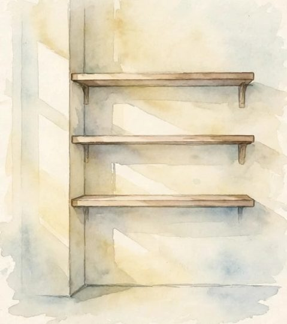
An empty shelf stands in soft light, holding exactly what it holds.
At this point the corridor changes character, and the visitor should be told plainly what the change is. Behind the first room there is no second, earlier room. The house does not continue, dimly, into a wing of recoverable infancy; it ends, the way a path ends at the edge of a field — not with a gate, but with the honest absence of more path. This hall is about that absence, and it treats the absence the way the house treats everything it inventories: without alarm, without romance, and without any plan to fill it by force.
Let the inventory be made, then, in the house's plain style. Not there: the scenes of the first two or three years, the rooms before the first room, the faces at their youngest, the sound of the house before the keeper had words for its sounds. Those years were lived — lived fully, at floor level, by the same keeper — and they were witnessed, daily, by the giants on duty. They simply were not kept in the first person, in a house whose keeping apparatus had not yet been built. Absence of the record is not absence of the life. The shelf is empty; the years were not.
It takes a particular steadiness to stand in front of what is not there and not reach for it. The reaching is understandable; the corridor's later habits are all habits of retrieval, and an empty stretch at the very start feels, to a grown keeper, like a form left blank on a form that matters. The house counsels a different posture, which the rest of this hall will explain by turns: look at the blank the way one looks at the sea from a cliff — not as a problem awaiting a bridge, but as the place where the property honestly ends. The house is not smaller for its true edges.
74The Years Before the First Room
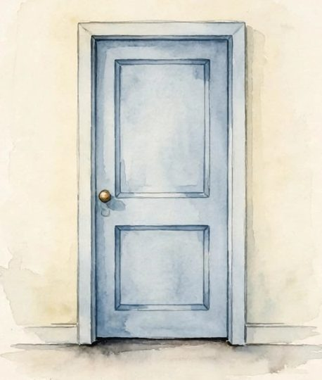
A closed door rests with no light beneath it, asking nothing.
Before the first room stand the years the keeper lived without keeping. The corridor does not reach them. Somewhere behind the bright fragment there was a smaller keeper still, to whom the world happened in its entirety — weather, arms, hunger, light — and of whom this house holds no first-person record at all. The years are not hidden and they are not withheld; they are simply prior. Prior to language, prior to the long memory's opening hours, prior to there being a keeper on duty in the sense this house uses the word. The life was underway. The registry had not yet begun to be kept.
The door to those years stands closed, and there is no light beneath it, and the house asks the visitor to notice how unominous that is, once looked at steadily. It is not the closed door of a secret. It is the closed door of a room the house never had — a stretch of the building that exists only from the outside, in other people's tellings and in photographs taken by taller hands. Everyone's corridor begins this way, mid-sentence, with the earlier page held by others. The door's plainness is the point: nothing is glowing behind it, nothing is knocking. It is simply where the corridor, honestly, starts.
So the years before the first room belong, in this house's accounting, to the keepers of other houses — to the giants who were grown at the time and who kept their own corridors, in which a small figure appears at floor level, busy and entire. What reaches us of those years reaches us the way weather reaches a valley: reported, believed, and not personally remembered. The house finds no grievance in this arrangement. A life is allowed to be begun by witnesses before it is begun by its keeper, and the handover, when it comes, comes in sunlight, in a room already warm.
75A Life Does Not Begin at Its First Memory
Let the hall state its plainest finding early, so the rest can rest on it. A life does not begin at its first memory. The keeper existed — named, held, fed, weathered, and entirely real — for years before the first room was kept, and those years are not a rumor or a preamble. They are part of the life in the fullest sense, differing from the later years in only one respect: they were kept by other people. To date a life from its first fragment would be like dating a house from the day its youngest tenant learned to read the address.
It follows that the first chapter of every biography is written in other hands, and the house insists this is not a defect of the archive but its normal, universal condition. No one's record of themselves opens their own story; the opening is always reported. The earliest keepers of any life are its witnesses — the arms, the voices, the taller photographers — and their keeping is not a lesser keeping for being secondhand when it reaches us. Beginnings are communal before they are personal, in every house on the street. The corridor starts where it starts, and the life, courteously, started earlier.
This finding, properly taken, is a rest. The visitor to the first room can stop apologizing for the foundation they cannot inspect. Every house stands on ground its owner did not watch being laid, and stands none the worse for it; the walls are plumb, the corridor runs true, the first room is lit. A life is not obliged to be memorable from its first hour in order to be fully a life, any more than a river is obliged to remember its spring. The keeper began in the keeping of others, as all keepers do, and began well enough to be standing here, at the far end of the corridor, reading the plaque.
The First Room Desk
One desk receives all correspondence for this house — questions, corrections, and word of any first room: its patch of light, its tall doors, its two kept seconds, and how the walk back went. It is read in the order it arrives.
76The Blank Is Not a Locked Door
A pram stands in a hallway, belonging to the years before the walking.
A locked door is a promise: it says there is a room behind this, and a key somewhere, and an owner who could admit you. The blank at the start of the corridor makes no such promise, and the house is careful with the difference. There is no room behind the years before the first room, kept from us by some fastening we might learn to pick. There is ground the house was simply never built on — the keeper not yet keeping, the registry not yet opened, the light not yet switched on in any first person. Different architecture entirely, and it deserves a different response.
The confusion is understandable, because the grown house genuinely has locked doors. Later rooms are kept private on purpose; some are closed for seasons; a few, honestly, are barred. The adult keeper knows this hardware well and, meeting a closed stretch at the very beginning, reaches for the familiar explanation: something in there is being kept from me. The house corrects the filing. Nothing at the start was ever locked, because locking is an act, and acts require an actor with a key. At the start there was no door, no key, no keeper to turn it — only a life being lived in the keeping of others.
So the blank is to be passed on the rounds the way one passes the pram in the hallway: with a glance, with respect for what it carried, and without any attempt to climb in. The visitor who stops rattling the start of the corridor discovers that the start is not resisting them. It is simply earlier than the house's own memory of itself, the way dawn is earlier than the household's first cup of tea. Beginnings are not barriers. A beginning is the place where a thing starts, stated plainly, and the corridor's start — bright room, then blank, then other people's light — is stated as plainly as the house can state it.
77This Page Does Not Dig
A crib holds a folded blanket, and nothing is asked of it.
Let it be entered in the corridor's own hand, so there is no misunderstanding further in: this page does not dig. There is no excavation planned at the start of the house, no technique on offer for tunneling under the first room into the years before it, no program of recovery, however gentle its branding. The refusal is not an apology and it is not a failure of nerve. It is a position, taken on the evidence: the blank at the beginning is not a burial. Nothing is down there under the floorboards of the corridor, waiting to be brought up into the light by sufficiently determined digging.
There is a second reason, and it concerns what digging actually produces. A spade turned into a blank does not come up holding the past; it comes up holding whatever the digger brought down in their pockets. The corridor's later rooms are full of furniture, and a determined excavator at the start of the house will furnish the blank with it — this face from a photograph, that kitchen from a telling — and call the arrangement a discovery. The house has a plainer word for that, and the word is forgery, even when the forger is honest and the motive is love. The first room's neighbor is a blank, and the blank will not be furnished by force.
What this page does instead of digging can be said in one breath. It visits what exists. It reads the fragment the way the fragment asks to be read, slowly and at floor level. It labels what came from tellings and photographs, without shame and without confusion. It keeps the first room swept, and its doorway easy, and its small keeper kindly spoken to. And it leaves the years before the room in their own keeping, which is the keeping of the people who were grown at the time. Attention is this house's whole method, and attention, properly practiced, has never once needed a spade.
78What Cannot Be Recovered Is Not Stolen
The blank at the start of a life can feel, on certain evenings, like a theft. The years were mine, the reasoning goes; they happened to me, in my own first person, and now they are gone from my keeping — surely someone took them, or let them fall, or failed to hand them over. The house answers this feeling carefully, because it is an honest feeling and deserves better than a shrug. Theft requires a thief and a taking. Here there is neither. The early years were not removed from the keeper's shelf. The keeper had not yet grown the hands to hold them with.
Nor was anything stolen by the other keepers, who are the usual suspects in this quiet courtroom. The giants did not hoard the early years; they kept them the only way the grown can keep a child's years — in their own corridors, in tellings, in photographs — and handed over what could be handed over, which is most of what this house knows about its own start. And time is not a thief either, whatever the poets say. Time is the corridor itself, the medium the whole house stands in. A river is not stolen by its current. A beginning is not stolen by being early.
The distinction matters because it changes what the keeper does next. A theft sends one looking for the thief; a blank sends one, eventually, back to the rooms that exist. The house has watched keepers spend good years on the investigation — interrogating the start of the corridor, resenting the witnesses, mourning the shelf as though it had been robbed in the night. The shelf was never robbed. Its hooks are empty the way a coat hook is empty in a house where the child has not yet come in from the garden. Nothing hung there yet, in this keeping. That is the whole of it, and it is bearable, and some evenings it is even restful.
79Other Keepers Were on Duty
A corridor fades into gentle dimness, where someone else's watch began.
The first room's keeper was not the first keeper of the life. Before the small keeper took up the post — before there was a post — other keepers were on duty, and the house enters their service in the record with respect. The years that are blank in this corridor were not unlit years. They were lit in other houses, along other corridors, by the grown people whose watch it was. Somebody kept the child through every one of those unremembered nights, and kept, incidentally and without being asked, the only account of them that exists anywhere.
Their duty was not primarily archival, and the house honors the right order of it. They were on duty to keep the child — fed, warm, carried, slept in safety — and the record they kept was a by-product of the keeping, the way a lighthouse log is a by-product of the light. That their account is partial, and told from their height, and colored by their love, makes it like every record ever kept, including the fragment in the first room. It does not make it negligible. Between this house's blank and their telling stands the whole of what can be known about the start, and it arrived by their watch.
Every corridor in this estate begins, therefore, with a handover. At the first room, the watch changes: behind it, the years kept by others; before it, the years the keeper keeps themselves, starting with two seconds of summer and a patch of light. The house keeps the handover formal, because it deserves formality. The previous shift is thanked, not audited. Their log is received, not cross-examined. And the small keeper, reporting for duty at three or four or five with empty hands and a whole bright room, is understood to be relieving giants — who are entitled, at last, to sit down.
80The Record Kept by Love
An unopened box keeps its ribbon intact, saved by hands that meant it.
The record of the early years, such as it is, was not kept by a clerk. It was kept by love, and the house asks that the fact be weighed in full, in both directions, before the record is either trusted or discounted. Love is not a systematic archivist. It kept the first step and lost the date; it kept the song and lost the year; it kept, above all, the impression of the child — bright, particular, entire — and let the documentation go hang. But what love kept, it kept at full strength, and some of it has outlasted every more official record in the corridor.
This is why the record of the blank years so often arrives in the form of a keepsake rather than a file: the box saved unopened, the anecdote polished by a hundred tellings, the photograph kept in the good album and not the drawer. Love preserves the way a house preserves — by keeping things in the warm rooms, carried and handled and handed on — and its archive is accordingly warm, worn, and irreplaceable. The grown keeper receives it on those terms: not as evidence, since this house has adjourned that court, and not as gospel either, but as what it plainly is — the start of a life, kept by the people who loved it first.
And it is enough to begin on. The house will not pretend the record kept by love is complete, and will not apologize for building the corridor's head upon it, because there is nothing else to build on and nothing more is coming. What the keeper cannot remember was, in the main, remembered for them — told at tables, saved in boxes, kept in the corridors of other houses by keepers who have since handed over the watch. A beginning held in trust by love, and delivered in sunlight at the first room, is not a gap in a life's record. It is the record's first and kindest entry.
81An Empty Shelf Is Still a Shelf
At the far end of the corridor, where the shelves of the archive stand, some of them are empty. Not broken, not dusty with neglect, simply empty: the years before the first room left nothing behind to store. A visitor looking for a complete record might call this a gap, and the house does not argue about the word. But it insists on the rest of the sentence. The shelf itself is there. It was built, it holds its level, it belongs to the same corridor as the crowded shelves further up, and its emptiness is a fact of the same ordinary kind as their fullness.
The temptation, standing before an empty shelf, is to fill it. The house resists this the way a good keeper resists all tidy fictions: firmly, and without drama. An empty shelf is not stocked with guesses, with other people's childhoods, with scenes assembled from photographs of strangers who happen to share your face at four. It stays empty, and in staying empty it tells the truth, which is the only service a shelf can perform. What it says is short. Those years were lived. They were simply not left in my keeping. That is all, and it is enough.
And there is this, which the house counts as the shelf's quiet virtue: it makes the full shelves honest. A corridor in which every shelf groaned under exhibits would be a corridor nobody should trust, because real archives are patchy and real beginnings are thin. The empty shelf at the far end is the archive's certificate of authenticity, hung where everyone can see it. Beside the patch of light, beside the table edge, beside the voice from the other room, it stands in the record exactly as it is: present, level, and empty, asking no one to apologize for it.
82No Shame in a Short Corridor
A row of hooks along a wall, nothing hanging on any of them.
Some corridors are long. A visitor walks and walks, passing early rooms by the dozen, each with its furnishing of fragments, before the carpet of memory finally gives out. Other corridors are short. Three steps from the present's far business, the walk is done; the first room stands close to everything else, and beyond it, the honest blank. The house keeps both kinds of corridor on the same street, and it has never once posted their lengths in the window, because a corridor's length is a measurement, not a merit, and the two have been confused often enough already.
Shame enters, as it usually does, by comparison. Someone at a table describes a nursery in perfect detail, the wallpaper, the song, the weather of a whole year, and the keeper of the short corridor sits quieter over their plate, as if a short corridor were a short life. It is not. It is a short approach to the same kind of room. What the first room holds does not grow with the length of the walk toward it, and a keeper who arrives in three steps knows their room exactly as well as the keeper who arrives in thirty.
There is even a grace in it, which the house mentions without pressing the point. A short corridor means a short walk back. The keeper of three steps visits their first room the way one visits a neighbour on the same landing: often, briefly, without ceremony, on the way to something else. The room stays in daily use, unsolemn, unshrunk by distance. And when the visit is over, the present is right there, three steps up, with its kettle on. No shame attaches to any of this. It never did. The corridor is the length it is.
83The Beginning Is Allowed to Be Quiet
A quiet nursery corner, a rocking chair standing still in soft light.
Not every beginning arrives with a fanfare, and the first room is not required to justify its quietness. Some beginnings are loud with incident: a journey, a storm, a house full of voices. Others are nothing more than a stillness that happened to be kept — a corner, a chair, a quality of light on an ordinary morning when nothing was occurring at all. The house files both kinds under the same heading, in the same hand, because a beginning's volume has never been the measure of a beginning. Quiet is a complete way for a life to start being remembered.
Adults lean toward a quiet room the way they lean toward a quiet guest, expecting the silence to be a withholding, a door half closed on something that ought to be said. The house discourages the leaning. The first room is not being reticent. It is simply the size it is, furnished with what a small keeper actually kept, and a small keeper, left in peace in a corner of morning, keeps the peace. That is the whole exhibit. To demand more of it — a plot, a revelation, a reason — is to bring the present's appetite into a room that predates appetite's vocabulary.
So the house lets the far end of the corridor be hushed, and counts the hush among the corridor's legitimate weathers. A life that begins in quiet is not a life that began less. It began the way most mornings begin, the way most rooms in most houses spend most of their hours: without announcement, in its own light, attended by whoever was near. The keeper who stands in that doorway is not standing in less of a past. They are standing in a past that kept its voice down, and has every right to go on keeping it.
84Do Not Shake the Room
There is a way of visiting the first room that amounts to shaking it. The visitor arrives with questions the way one arrives with a ladder and a torch, determined that the fragment will confess the rest of the film if it is only pressed hard enough, often enough, in the right order. The house has watched this happen and reports the result plainly: the room gives back nothing but the shaking. A fragment pressed becomes a fragment bruised, and the visitor leaves with less than they brought, which was, at most, two seconds of summer and a patch of light.
It is not stubbornness that keeps the room quiet under pressure. It is arithmetic. The room holds what a keeper of three or four was able to hold, gathered with a small keeper's equipment: the senses, the weather, the nearness of large kind people. Pressing cannot add to that inventory, because the inventory was closed, gently and completely, some decades ago. What pressure can do is worse than nothing. It can persuade the visitor to manufacture the missing footage and then mistake the manufacture for the room, which is the one unforgivable transaction in the whole corridor.
So the house posts its smallest rule at the far end of the corridor, in the plainest hand it owns: do not shake the room. Stand in the doorway. Let the light be the light and the fragment be the fragment. Take what is offered, which is never nothing, and leave the rest exactly where it has been resting, undisturbed, since the year of the small shoes. A room visited gently stays visitable. That is the entire secret of the corridor's far end, and it is not really a secret. It is only a courtesy, extended backward.
85The Weather of Then
Summer light lying across a whole room, asking nothing of it.
Every first room has a climate, and the climate is half the exhibit. Ask a keeper about their earliest memory and, before any event is mentioned, the weather arrives: the light was like this, the air was like that, the day stood at such and such a point in its long arc. This is not decoration added later by a sentimental staff. It is the form in which a small keeper's records were kept. Events required a vocabulary the keeper did not yet own. Weather required only skin, and skin was on duty from the first morning.
Visitors sometimes notice that the climate of the first room seems improbably stable. It is, in corridor after corridor, almost summer, or a morning that behaved like summer's envoy, and the light leans at the one angle that flatters everything it touches. The house has noticed too, and declines to correct the record. A small keeper kept what struck the senses, and what struck the senses, in the years of being carried and set down in gardens, was disproportionately the fine end of the year. The weather of then is not a forecast. It is a selection, honestly come by.
To visit the first room, then, is in part to step out of the present's weather and into another climate altogether, and the house recommends noticing the crossing. The corridor's far end does not share the day's forecast. Whatever rain the present is keeping for you will still be there when you walk back; it cannot follow you in. Inside the doorway it is the old light, doing the old work, at the old angle, on the same patch of floor. Stand there a moment before looking at anything else. The weather is the first thing the room kept, and the first thing it offers.
86Almost Summer, Permanently
A garden held in permanent late afternoon, the light in no hurry.
It is, in the overwhelming majority of first rooms, almost summer. Not the height of it, not the blaze of the year's midday, but the approach: the long light of late spring, the garden deciding, the air already warm at the hour when, in other seasons, it would still be deciding too. The house has stopped finding this suspicious. A small keeper's year was not divided as the calendar divides it. It was divided into indoors and outdoors, carried and set down, and the outdoors of the kept fragments belongs, nearly always, to the season of being set down.
Permanently is the other word in the room's title, and it is exact. The almost summer of the first room never resolves. It does not ripen into July and it does not fall back into spring rain; it holds at its angle, decade after decade, while the keeper's actual summers come and go at the full adult price. The house does not call this an error in the record. A threshold is a real place, and a small keeper lived on thresholds: the edge of the table, the top of the stairs, the garden gate. The season kept the same address as everything else.
The adult who visits is sometimes tempted to bring the room up to date, to let a little of the present's weather in, as one opens a window in a house kept shut too long. The house advises against the renovation. The almost summer is not staleness; it is the climate the fragment has lived in since it was laid down, and it has kept the colours the way shade keeps them. Walk in, by all means. Stand in the long light. But leave the season where it stands: permanently almost, which is to say, permanently beginning.
87The Light Slanted the Same Way
Of everything in the first room, the detail that never varies is the angle of the light. Tell the fragment twenty times across forty years and the furnishings drift, the voices change their words, a face is borrowed and returned — but the light comes in from the same side, at the same slant, and lands on the same stretch of floor. The house trusts this consistency without making a mystery of it. The slant was not memorized by the mind. It was registered by the skin and the eyes together, the way a plant registers it, and the body keeps that ledger faithfully.
Keepers orient themselves by that slant the way sailors orient by a fixed star. Ask where anything stood in the first room and the answer is given in light: the chair was where the brightness ended, the door was beyond the bright patch, the large kind person crossed the slant and for a moment was all outline. Even the room's emptiness is measured in it. And when a keeper goes back, as an adult, to an actual house of the time, it is the slant they test first, standing in the doorway like an inspector of suns, waiting for the floor to agree.
Sometimes the floor does not agree. Windows have been moved, walls taken down, a whole house replaced by its own renovation, and the actual light of the actual place slants in some new, reasonable, unrelated way. The house prepares its visitors for this disappointment and refuses to treat it as a verdict. The kept slant belongs to then, and then is not on trial. The room in the corridor keeps its own sun, at its own angle, and the adult standing in the altered doorway is not standing in a falsehood. They are standing in two true places, one of which is gone.
88Time Moved at Walking Pace
A simple wall clock in soft light, its hands in no hurry.
In the first room, time had not yet been issued its uniform. It did not tick in the adult manner, divided, numbered and owed. It moved at walking pace, which is to say at the pace of the large people crossing the room, the pace of light crossing a floor, the pace of a meal arriving eventually from a kitchen that operated on laws of its own. A small keeper knew the hour by ripeness and by shadow, by hunger and by the quality of the voices, and the system, the house notes, kept excellent time for the only appointments that existed.
This is why the adult's questions go so gently unanswered at the far end of the corridor. When did it happen, how long did it last, what came just before: these are questions built from the uniformed kind of time, and the first room was furnished before the uniform arrived. The fragment does not withhold its date out of coyness. It has no date because its keeper kept other things — the slant, the warmth, the nearness — and let the calendar go, the way one lets go of a railing one was never holding. The house finds the exchange entirely fair.
There is a practical consequence, which visitors report with some surprise: standing in the first room slows the walker. The corridor back is the same length as the corridor down, but nobody hurries it, because the room at the far end runs on walking pace and the tempo is contagious. For a little while after a visit, the present's clocks look overdressed. Then the day reasserts itself, as it should. But the house counts that small recalibration among the first room's regular gifts: proof, carried in the legs, that time once moved otherwise, and that the keeper survived at that pace perfectly well.
89A Day Lasted a Year, Kindly
A long shadow lying across a lawn in the evening.
Everyone who visits the first room remarks on the size of its day. The fragment may hold only two seconds of it, but the day around those seconds is understood to have been enormous — a country of morning, a long afternoon province, an evening that took its time arriving like a relative walking from the next valley. Adults, whose days now pass at the speed of a turned page, tend to mention this with something like disbelief. The house confirms it without embroidery. A day lasted a year then. The only correction it offers is the title's: it lasted kindly.
The kindness lay in the ownership. The long day belonged, in a way no later day quite manages, to the person living it. It was not yet mortgaged to appointments, not yet taxed by the knowledge of everything the day was failing to include. Its hours were not spent; they were inhabited, the way the small keeper inhabited the space under the table, completely and without a forwarding address. Even its empty stretches were a kind of property. A year of that is not a delay in a life. It is a life, at full scale, before scale changed.
The visitor cannot move back into that duration, and the house does not pretend otherwise. A day will not last a year again; the machinery of attention has been rebuilt since, and mostly for good reasons. But the memory of the long day does its work quietly, standing in the corridor as a unit of measure. Against it, the present's haste is visible as what it is: a pace, not a law. Keepers come back from the far end reporting that their day has not lengthened, exactly. It has only stopped insisting that it is short.
90Boredom Had Not Been Invented
It would be pleasant to report that the small keeper was never bored, but the house prefers accuracy to pleasantness: the small keeper was often, thoroughly, at a loose end. What had not been invented yet was the complaint. Boredom, as the adult world practices it, is not the presence of unfilled time but the verdict passed on it — a finding that the hour has failed to perform. In the first room no such court sat. An unfilled hour was simply an hour, with its own light in it, and the keeper lay on the floor inside it like a cat in a sun patch, unindicted.
The record shows what filled the unfilled hours, and it is not nothing. Dust crossing a shaft of light, audited mote by mote. A kettle's long approach to its one event. The proceedings of a garden at knee height, where a snail's itinerary was a serial drama and a line of ants ran a freight service of genuine consequence. This is worth noticing, because it explains the archive. A keeper trained by empty hours to attend to nearly nothing will sometimes attend so completely that two seconds of it are still on file eighty years later, in perfect condition.
The invention came later, along with the expectation that every hour arrive with its entertainment provided, like a train with a buffet car. The house does not scold the invention; the present has its reasons, and some of them are even good. It only keeps the earlier arrangement on display at the far end of the corridor, where a visitor can still stand inside an hour that asks for nothing and offers light. Some visitors find the exhibit restful. Some find it almost unbearable, which the house also records, without judgment, as information about the corridor's nearer end.
The First Room Desk
One desk receives all correspondence for this house — questions, corrections, and word of any first room: its patch of light, its tall doors, its two kept seconds, and how the walk back went. It is read in the order it arrives.
91Everything Was About to Happen
An orchard path running on ahead, nothing urgent in it.
In the first room, the dominant tense is the future, and it is everywhere at once. The kettle is about to sing. The door is about to open. The large people are about to say the thing, fetch the thing, begin the thing that will reorganize the afternoon. Nothing has concluded; conclusions belong to a later wing of the house. A small keeper lived the way a held breath lives, in a state of permanent, untroubled aboutness, and the fragment keeps that charge the way amber keeps a fly: the moment preserved is not the event. It is the moment just before it.
Adults, reviewing the fragment, sometimes file it under nothing happened, and the house gently returns the form unapproved. Nothing happening was the local name for everything being about to, and for a keeper of three or four the about-to was not a lesser state than the event. It was often the greater one. The announced bath, the promised garden, the footsteps approaching the door: each carried its full weather of anticipation, complete in itself, needing no delivery. The fragment's two seconds are crowded, on inspection, with more futures than most adult hours manage to hold.
The peculiar ache of the room, every visitor agrees, is that the person standing in the doorway knows how the about-to resolved. The door opened on a whole life. The keeper inside knows none of it, and stands in the bright approach to everything with a clear heart. The house asks one courtesy here, and it is the corridor's hardest: leave the outcomes in the corridor. Do not carry the news back in. The room has kept its imminence intact for decades, against considerable odds, and it is not the visitor's place to spend it.
92The Future Was Not a Worry Yet
A porch in soft light, the future not yet arrived at it.
The future, in the first room, is not absent. It arrives constantly, announced from the kitchen and the doorway: later, soon, when you are bigger, after the bath. What has not yet been installed is the worry. The small keeper receives the future the way the room receives weather through a window — as something that will come through on its own schedule and be dealt with by the large people, whose department it plainly is. Anticipation without apprehension: the house considers this one of the rarest climates in the whole building, and the first room is its last surviving province.
The house is careful not to gild this. The small keeper's peace was partly a simple not-knowing, and not-knowing is no philosophy. But it was not only that. It was also a trust with evidence behind it: meals had always arrived, the arms had always been there at the top of the stairs, the announced futures had mostly kept their word. Worry is a craft learned later, in the corridor's nearer rooms, where the keeper took over the department of what might happen. Standing in the first room, the visitor can feel how recent that appointment is, and how loud the department has become.
Nobody is asked to resign the department. The present has real weather in it, and somebody must watch the sky; the adult keeper took the post for sound reasons and the house does not mock the posting. A visit to the first room is only a furlough — twenty minutes in a climate where the future is still just the next kind thing the day is about to do. Keepers come back up the corridor, by all accounts, with their shoulders lower. The future has not changed. It has been, briefly, only the future again, and not the worry that learned to answer to its name.
93The Room Smelled of Ordinary Life
If the first room has a smell, it is never the smell of an occasion. No pine branches, no celebration baking, no visitor's perfume survives at the far end of the corridor. What survives is the smell of ordinary life on an ordinary day: warm dust, soap, bread finding its way from an oven, the particular must of a particular house that no other house has ever quite replicated. The small keeper did not select it. The nose kept what the air kept bringing, and the air of a home brings the everyday, ten thousand hours of it, until the everyday becomes the scent itself.
Of all the senses, smell keeps the shortest corridor. A keeper of sixty can turn a corner in a strange city, catch the one compound the nose filed before the mind had words, and be standing for half a second at the original height, in the original light, with the original day about to happen. The house has a policy for these ambushes, learned over long practice: do not chase them and do not apologize for them. Let the half second run its full length. It is the first room, paying a call in the only direction the corridor was never expected to run.
There is a reason the house lingers over this exhibit. The smell of ordinary life is the smell of the medium everything else happened in — the water the bright fish of the fragment swam in, unnoticed at the time because it was everywhere. Events were rare and are mostly gone. The medium was constant and is, astonishingly, still available: other houses keep brewing it, other mornings keep smelling of it. Of all the first room's contents, it is the one a keeper can still walk into without a corridor, on any street, in any decade, entirely by accident.
94Safety, or the Feeling of It
A loaf of bread cooling on a windowsill in the morning.
The house keeps this exhibit under a title with a comma in it, and the comma is load-bearing. It cannot certify, at this distance, that the first room was safe. Certification would require records the corridor does not keep and witnesses whose testimony belongs to other halls. What the fragment indisputably holds is the feeling: the unexamined, full-body confidence of a small keeper for whom the world, at that hour, was staffed and the floor was where floors belong. The feeling is on file in perfect condition. The house labels it precisely, and finds the precision in no way reduces it.
A feeling kept is not a rumour about the past; it is itself a piece of the past, and in this case a working piece. The confidence of the first room went on to set the keeper's defaults — the first guess about strangers, about floors, about whether the day is staffed — and later rooms revised those defaults, as later rooms do. But the original setting remains legible underneath, the way the first handwriting remains legible under the practised one. The house does not claim the feeling was the whole truth of that house. It claims the feeling was true, which is a different and sufficient claim.
And the house keeps the comma for the other corridors too, the ones whose first rooms hold no such confidence — a watchfulness, perhaps, or a weather less kind. Those rooms are not corrections to this one, and this one is not the standard they failed to meet. Each corridor keeps what its small keeper kept, and the register records the feeling, whichever feeling it is, with the same care and the same comma. Safety, or the feeling of it: the exhibit stands, honestly labelled, in the weather of then, and the visitor is asked only to read the label all the way to the end.
95The World Had Not Been Explained
A house in morning light, entire and so far unexplained.
In the first room, nothing arrived with its explanation attached. The moon kept pace with the evening walk and no one filed a correction. Voices came through walls, water vanished down the bath's bright whirlpool to an address nobody specified, and the large people performed their daily miracles — cooking, telephoning, producing objects from cupboards — without a word of mechanism. The small keeper did not experience any of this as a lack. Explanation is a taste acquired later, like coffee. At the time, the world ran perfectly well unexplained, and its running was the exhibit.
The explanations came, of course, in their season, and the house does not pretend they were a poor bargain. A keeper who understands the moon can navigate by it; a keeper who understands the whirlpool is less likely to fear it. Something was gained at every step of the corridor, and the register declines to romanticize the far end. But something was also filed away at every step, and the first room is where the un-filed world is kept: things at full size and full strangeness, before they were reduced to their uses. The visitor stands there among explanations not yet spent.
Keepers report a particular restfulness in the room, and the house believes it can name the ingredient. For the length of a visit, nothing needs to be understood. The light is not a lesson, the warmth is not a clue, the voice from the other room is not evidence in an argument about the past. It all simply is, at the original scale, in the original weather. Adults spend their days inside explanations the way fish spend theirs inside water, and rarely notice the medium. In the first room the medium is briefly air again, and the visitor breathes it, and walks back up the corridor a little less explained themselves.
96The Weather Holds
The hall of the weather ends where it began, with the simple report that gives this room its title. The weather holds. It has held through every year the keeper has spent in the corridor's nearer rooms — through the decades of dates, explanations, schedules and worries — without maintenance, without renewal, without anyone's permission. The almost summer has not rained itself out. The slant has not straightened. The long day has not been foreclosed. Of all the house's holdings, the weather of then may be the least impressive, and it is unquestionably the most durable.
It holds, the house believes, because of where it was filed. Events were stored in the perishable wing — in sequence, in words, in the keeping of the mind, which is a busy and renovating landlord. The weather was stored in the walls themselves: in skin that learned a slant of light, in a nose that learned a house, in ears that learned the sound of dishes through a doorway. What the body filed, the body keeps, at body temperature, without consulting the management. That is why the oldest thing in the building is not an object or a sentence. It is a climate.
So the visitor can be told, and the house does not make promises lightly, that this much will be as it was. Come back in a year or in twenty and the corridor's far end will be standing in its weather: the light at its angle, the season at its approach, the day at its generous length. The rest of the hall's contents may be borrowed, fragmentary, disputed by photographs. The weather is the keeper's own, kept in the keeper's own walls. The hall closes its door on that assurance, quietly, the way weather itself changes: by holding.
97Step One: Walk to the Far End of the Corridor
A corridor seen walking the other way, toward one small door.
The first step is only a walk, and the house is particular about the word only. Nothing is to be done on the way down the corridor: no inventory, no preparation, no bracing. The visitor simply walks, past the doors of the nearer rooms, which are the whole life in order — the years of sentences, of explanations, of schedules kept and worries staffed. The step is sized as it is because most of what the visit will accomplish happens in the walking: a gradual handing back, room by room, of everything the far end has no use for.
There is no shorter way, and the step exists to say so. Keepers are sometimes impatient to arrive — to be standing in the bright room with the fragment in hand, the visit accomplished. But a visitor who could be set down at the far end without the walk would arrive at the present's tempo, carrying the present's weather on their coat, and the first room would receive a raid instead of a visit. The corridor is the decompression chamber between two climates of time. Its length, whatever length it is, is not an obstacle to the step. It is the step.
The step asks one more discipline of the walker, and it is the quietest of the twelve: to pass the nearer doors without opening them. Every room along the corridor has its claim — an old embarrassment with its hand up, an old triumph clearing its throat — and the walk is not the occasion for any of them. They will keep. They have kept this long. The keeper who learns to walk the corridor whole, neither fleeing it nor auditing it, arrives at the far end with clean hands and an unhurried heart, which are the only two instruments the first room requires.
98Step Two: Stand in the Doorway, Don't Rush In
A doorway with a small lamp beside it, the light waiting politely.
The second step is a pause disguised as a position, and keepers consistently underrate it until they have tried both ways. The doorway of the first room is not a line to be crossed at speed. It is a station of the visit, with its own view and its own work. From the doorway, and only from the doorway, the room composes itself: the patch of light takes its place, the table edge finds its height, the weather settles into its climate. The visitor who rushes in gets the room in pieces, grabbed at. The visitor who stands gets it whole, at the distance at which it was first seen.
There is a question of size, and the doorway is where it is honestly faced. The room beyond was furnished for a keeper of three feet, and the visitor arrives in a body that no longer fits under its table. To rush in is to fill the room with the present's dimensions, to loom. To stand in the doorway is to accept the terms of the visit: that one is a guest here, larger than the furniture, later than the weather, and welcome on exactly those terms and no others. The small keeper kept the room. The least the large visitor can do is not rearrange it by entering carelessly.
Nothing is lost by the pause except haste, and haste was not invited. The room has waited decades without deteriorating; it will wait the length of a held breath without complaint. What the standing buys is the visitor's own adjustment — eyes settling to the old light, shoulders settling out of the present's weather, the heart remembering the walking pace it was promised. Keepers who observe this step report that the visit proper, when it begins, feels less like an arrival and more like a resumption, as if the room had been expecting them all along and was in no hurry whatsoever.
99Step Three: Take the Fragment as It Is
The third step sounds like surrender and is actually a method. Take the fragment as it is: neither smaller than it is, which is modesty's error, nor larger, which is longing's. The patch of light is the size it is. The voice says the words it says and then stops, mid-corridor, and the two seconds run their two seconds and no more. The keeper who accepts these borders exactly discovers something the strugglers miss: the borders are information. Where the fragment ends is part of what it kept, because it ends where the small keeper's attention ended, and attention is the whole archive.
As it is includes the fragment's untidiness, and this is where the step earns its place. The room's geography may be impossible — the garden on the wrong side of the house, the stairs where no stairs were. The wallpaper may be borrowed, the voice may be wearing another decade's clothes. The step forbids the tidy-minded visitor from correcting any of it mid-visit. Corrections are for the walk back, in the register, in pencil. Inside the room, the exhibit hangs as found. A fragment corrected is a fragment replaced, and replacement is the one transaction the corridor has already ruled unforgivable.
Taken as it is, the fragment changes its office in the visitor's hands. It stops being a clue — a scrap pointing at a lost whole, valuable only for what it suggests — and becomes a place: small, complete in its incompleteness, good to stand in. This is the change the whole flight of steps is engineered to produce, and it happens here, early, or it tends not to happen at all. The keeper who can let two seconds be two seconds, in their own light, without ransom or apology, has done the hardest work of the visit before the visit has properly begun.
100Step Four: Ask the Senses What They Kept
A patch of sunlight on floorboards, framed by shadow.
The adult retelling of a fragment is usually all eyes, and the fourth step exists to correct the imbalance. The small keeper did not keep the room in pictures. The keeping was done by the whole body, and the body is a committee: the eyes filed the light, but the ears filed the dishes and the doorway voices, the nose filed the house itself, the skin filed the warmth and the slant together. The step invites each member of the committee to report, in turn, without interruption from the chair, which is the eyes, accustomed to doing all the talking.
The reports, when they come, are characteristically uneven, and the step makes no apology for the spread. The ears may deliver a whole corridor of sound; the tongue may manage one taste, or confess, honourably, that it kept nothing at all. The skin remembers the warmth of a particular lap of sunlight as if it were last week, while the nose, that champion filer, occasionally produces the entire house in one breath and then cannot repeat the performance. All of it is entered in the register under the same heading: kept. Quantity was never the criterion for admission.
Keepers who take this step in order are regularly surprised by the room's growth. The fragment they arrived with — a picture, mostly, with the sound turned off — acquires its weather, its acoustics, its temperature. The two seconds get no longer, but they get deeper, the way a room gets deeper when the lamp is lit in its far corner. And the committee, having been consulted, tends to stay consulted: on later visits the reports arrive unbidden, the nose first, as always, with the eyes bringing up the rear and pretending, for form's sake, that they led the way.
101Step Five: Check One Photograph, Gently
A faded photograph laid flat under a lamp, its picture pale.
The fifth step calls one witness, and the emphasis falls equally on one and on witness. Not the album, not the box in the attic, not the whole photographic record subpoenaed at midnight: one photograph, laid flat under a lamp, consulted for what it can actually say. A photograph can certify a wallpaper, a haircut, the make of a chair, the fact that a particular garden existed outside a particular window. It cannot certify the weather in the keeper's skin, and the step exists in part to keep the witness inside its competence, where its testimony is excellent, instead of outside it, where it becomes a forgery's accomplice.
Gently is the step's working instruction, and it governs both directions of the comparison. Sometimes the photograph agrees with the fragment so completely that the keeper feels the floor of the corridor steady under them: yes, that window, that light, that exact enormous chair. Sometimes it disagrees — the room faces the other way, the celebrated tree is not yet planted — and the step asks the keeper to receive the disagreement like weather, not like a verdict. A photograph is one keeper's account, taken from outside the small keeper's skin. Two accounts of one morning may differ and both be entered, in the register, in good faith.
Then the step is finished, and its last motion matters as much as its first: the photograph goes back where it lives. In the album, in the box, in the frame on the wall of some nearer room. It is not carried into the first room and propped against the fragment like a correction. It was consulted, the way one consults an elder — with respect, with one question, without handing over the house. The keeper returns to the doorway with the fragment restored to first place in their hands, now knowing a little more about which parts of it the camera saw, and which parts only the skin did.
102Step Six: Ask One Elder One Question
The sixth step leaves the corridor and goes visiting, and it travels light: one elder, one question. The elder is whoever still keeps an adjacent stretch of the corridor — a parent, an aunt, the neighbour who was already tall in the years in question. They were there, in the large-person capacity, and their keeping runs alongside the small keeper's like a fence alongside a field. The singleness of the question is the step's courtesy and its method both. One question can be answered from the heart of an actual memory. Twenty become an examination, and examinations produce testimony, which is a different and poorer substance.
The question itself wants choosing with care, and the house offers its experience freely. Ask about the room, not about yourself. Ask what the kitchen faced, whether the garden gate stuck, who was living in the house beyond the field — the plain furniture of the years. Do not ask what you were like, which invites a verdict dressed as recollection, or what really happened, which invites the family version at full volume. The elder's ordinary answers are pure ore: dates the fragment lacks, names for the voices, the make of the chair. One question, plainly put, has filled more of the register than any archive raid.
Then receive the answer the way the step requires: as the elder's own keeping, offered from their corridor, which ran at adult height and in adult weather. It is not a correction of the fragment, and it is not raw material for rebuilding the fragment in the elder's image. It is an adjoining account, to be labelled with its keeper's name and set on the shelf beside yours. Keepers who complete this step often report a side effect the house values above the information itself: the corridor turns out to have been walked, all those years, in company — and some of the company is still, for now, at home to visitors.
103Step Seven: Label What Is Borrowed, Without Shame
An elder's chair with a shawl over its back.
Now the visit turns clerical, and the seventh step is the corridor's small act of bookkeeping. Lay the fragment out, in the mind or on the page, and label its parts: this I seem to have lived; this I was told so often it moved in; this arrived with a photograph; this nobody can source at all. The labels go on in pencil, in a plain hand, without ceremony. The house wishes it to be understood that this is a registrar's step, not a judge's. Nothing in the fragment is on trial. The labels merely record what is known about the provenance of the furniture.
The title's last three words carry the step, and the house will spend its whole paragraph on them if required. Without shame. A borrowed piece of the fragment is not a false piece. The story told at a hundred kitchen tables until it moved into the corridor was a gift of the house's other keepers, who kept what the small keeper could not and handed it down in the only durable packaging they had. To discover the borrowing and feel disgraced is to misread the entire economy of a family's memory. Shame belongs to the opposite transaction: knowing the labels and refusing to write them.
Keepers sometimes fear the labelled fragment will feel diminished, the way a magic trick pales when its mechanism is named. The house reports the opposite from long observation. A fragment whose borrowings are labelled in pencil stands steadier, not weaker: the lived core, now identified, no longer has to carry the whole weight of proof, and the borrowed wings can be enjoyed as wings, honoured as the work of other keepers. And pencil, the house reminds its visitors, is not a confession of uncertainty. It is the correct instrument for a register that expects, over a lifetime, to be revised.
104Step Eight: Thank the Small Keeper
A notebook lying open, nearly blank, a pencil resting on it.
The eighth step is the only one addressed to a person, and the person is three, or four, or five years old. Thank the small keeper. It is not a sentimental instruction, or not only that. It is a settlement of accounts. Every later room in the corridor — the sentences, the explanations, the whole furnished life — rests on the fact that a very small person, with no training, no method and no idea that keeping was occurring, kept this: the light, the slant, the warmth, the voice. The adult who walks the corridor is the beneficiary of that keeping, and beneficiaries, in this house, say thank you.
The thanks are not praise, and the distinction is the step's refinement. The small keeper was not trying, achieved nothing on purpose, and would have been baffled by a ceremony. What is being acknowledged is custody. Somebody was on duty in the first room when nobody knew a duty existed. Somebody attended so completely to the patch of light that it survived the demolition of practically everything around it. The register has a form for this, used rarely and in a plain hand: kept, by the keeper, aged three or four or five, in the ordinary course of being alive. Received, with thanks, by the keeper, later.
Visitors wonder what a thank-you can change, addressed to someone who cannot hear it in a room that cannot change. The step's answer is that it changes the visitor, which is the only part of the visit under the visitor's control. A keeper who has made the acknowledgment stands in the first room differently: less as a claimant with rights over the fragment, more as an heir with duties toward it. The fragment stops being evidence in the keeper's case about themselves. It becomes an inheritance, held in trust. The whole remainder of the walk — the writing down, the leaving unlit, the slow return — is done better by an heir than by a claimant.
105Step Nine: Write Down the Two Seconds
The ninth step takes out the pencil again. Write down the two seconds, in the plainest sentences available, exactly as they present themselves: the light, the edge, the voice, the slant, the weather of then. Not dressed, not interpreted, not improved in the direction of significance. The step is sized to the fragment, which is its mercy: two seconds take perhaps ten lines, and ten lines are within anyone's courage. What is being made is not literature and not evidence. It is a dated copy of the current telling, laid in the register against the day when the telling changes again, as tellings do.
A telling written down acquires one power the kept fragment lacks: it can be compared with itself later. The keeper who writes the two seconds at forty and again at sixty holds, in two short pages, a record of the drift — this colour deepened, that voice changed its words, the garden moved six feet toward the house. None of this is alarming once it is on paper. Drift documented is just the corridor's weather over a life. Drift undocumented becomes, in anxious hours, a suspicion that nothing was ever kept at all, which the two dated pages refute at a glance.
There is a last reason, and for many keepers it is the operative one. The fragment, unwritten, lives one life: the keeper's. Written down, it can be handed on — read aloud at a table, left in the register, found years later by someone who never met the small keeper and now, unexpectedly, has stood in the first room too. The house does not overstate the artifact's powers. It is ten plain lines. But ten plain lines have carried more of the corridor into the future than any amount of anxious rehearsing, and the step takes four minutes, and the pencil is already out.
The First Room Desk
One desk receives all correspondence for this house — questions, corrections, and word of any first room: its patch of light, its tall doors, its two kept seconds, and how the walk back went. It is read in the order it arrives.
106Step Ten: Leave the Rest Unlit
The dim far end of a corridor, the lamplight stopping politely.
The tenth step is a restraint, and it comes late in the sequence because it could not be asked earlier. Leave the rest unlit. Beyond the fragment's patch of light, the first room continues — or does not; the visitor is not going to find out on this visit, or on any visit, and the step asks that this be allowed to stand as a fact rather than a frustration. Not everything kept was kept in the light. Not everything in the room exists to be seen by the room's heir. Some of it rests, the way most of every life rests, in decent darkness, unwitnessed and complete.
Leaving it unlit is not a surrender to mystery, and the step dislikes the flavour of that phrase. The unlit rest is not teasing the visitor, withholding a revelation, keeping a secret with the keeper's name on it. Darkness is simply the room's original and majority condition. The lit patch is the exception — two seconds of it, by grace of a small keeper's attention. To light the whole room artificially would be to falsify its proportions entirely: a childhood floodlit is a childhood misreported. The step keeps the ratio honest: a little light, honestly come by, in a great deal of decent dark.
There is a test hidden in this step, and by now the visitor will recognize its shape. To stand in the doorway, in possession of the lit fragment, and deliberately not reach for the rest — this is the graduation exercise of the entire sequence. The shaking has stopped. The claimant has gone home; the heir remains, and an heir knows that an inheritance partly in darkness is still an inheritance, and that the dark rooms of the estate are not debts owed to curiosity. Leave them, the step says, in the house's own word: unlit, unbothered, and entirely all right.
107Step Eleven: Walk Back Slowly
A teapot and two cups waiting at the corridor's near end.
The eleventh step is the first step walked in reverse, and it is not the same step. The corridor back runs past the same doors in the opposite order, uphill through the years, and the instruction is only about pace: slowly. The visitor is carrying something now — not information, mostly; a temperature, a tempo, a small recalibration of the defaults — and cargo of that kind is not hurried. Two climates meet along this walk, the weather of then and the weather of now, and slowness is simply the courtesy of letting them mix at a rate the traveller can stand.
Keepers report that the nearer rooms look different on the way up, and the house, which has heard the report for decades, no longer doubts it. Nothing has been repainted. A door that embarrassed the walker for years is passed with something closer to a nod; a triumph that used to demand an audience gets one, briefly, and kindly. The step contains one prohibition, offered in the house's mildest voice: make no resolutions in the corridor. Decisions taken mid-walk belong to neither climate and age badly in both. Carry the visit home first. The present is fully equipped to receive it, at the corridor's end, with the kettle on.
And there is the plainest reason of all, which the house keeps for the end of this room like a handrail. The fragment is carried back in the same vessel it was carried in before — the keeper's attention — and attention, hurried, spills. Walk slowly and the two seconds arrive at the present intact, with their weather on them. Hurry, and the keeper arrives with wet sleeves and a story about a patch of light that no longer quite convinces even its teller. The step asks for nothing but a pace the corridor was built for. It was, the visitor may recall, walking pace all along.
108Step Twelve: Come Back to the Present for Tea
The twelfth step is deliberately the least mystical of the twelve, and the house will defend the bathos against all comers. Come back to the present for tea. The visit ends not in revelation but in the kitchen, with the corridor's door shut softly behind the walker and the ordinary rituals of now resuming their posts: the kettle, the cup, the hour with its proper name. This is by design. The first room is not a destination to emigrate to. It is a room in a house whose other rooms are lived in daily, and the sequence's last courtesy is to deliver the visitor back to them, warmly, with something hot to hold.
Tea, in this house, is also the tribunal of tellings, and the step knows it. It is at tables, over cups, that the fragment most often gets told — and a visit freshly made gives the telling its accuracy of weather, its unhurried order, its refusal to inflate. If the company is right, the keeper may tell the two seconds then and there, plainly, the way they were written down. If the company is not right, the tea still does its work. A visit does not owe anyone a performance. Some tellings are for the register only, and the cup, raised in silence, is also a complete sentence.
With the tea, the flight of steps is complete, and the house closes the hall with its one summary. Nothing was excavated. Nothing was unlocked. A keeper walked a corridor, stood in a doorway, received a fragment as it was, consulted the senses, one photograph and one elder, labelled the borrowings without shame, thanked the small keeper, wrote the two seconds down, left the rest unlit, and walked back slowly to a hot drink in the present tense. That is the whole method, if the word must be used, and it fits on one page of the register, with room left over for the next visit.
109The Long View from the First Room
A long corridor seen from its far end, the present small with distance.
Stand long enough in the first room's doorway and the view reverses itself. Behind the visitor, the fragment: two seconds, a patch of light. Before the visitor, the whole corridor — every room of the life in order, running from the small bright doorway to the present's lit kitchen, visible for once as a single building. It is the only vantage in the house from which the life can be seen entire, because it is the only one outside the sequence of it. The long view does not flatter the corridor and does not indict it. It shows a structure: connected, inhabited, longer than it felt from inside any one room.
Proportions are the long view's first gift. From the far end, the rooms that loom so large from inside them — the corridor's famous embarrassments, its celebrated triumphs, the year that ate the decade around it — take their true sizes, which are the sizes of doors. One door among many, neither the widest nor the last. Keepers who have stood in this doorway report the correction as a physical relief, like a load set down. The corridor is long, and its length, seen whole, is not a burden. It is the evidence that the house was lived in, fully, by someone who kept arriving.
And the long view settles one slander, quietly and for good. The corridor is sometimes described — by its own keeper, in tired hours — as a long dimming from the bright room at its end, a falling away from the weather of then into the weather of now. From the doorway, the building refuses the description. It does not run downhill from the light. It runs outward from it, the way a house grows around the first room its builder ever finished. The bright room is not the life's lost standard. It is its foundation, and foundations are not mourned. They are built on.
110The Corridor Runs Both Ways
Many small doors standing along one long hallway.
The corridor is usually imagined as a one-way street, travelled by the keeper in the single direction of back. The long view corrects the traffic report. The corridor runs both ways, and always has. Down it go the questions, the visits, the written-down tellings, the labelled photographs — the present's whole diplomatic service to the past. Up it come the weather of then, the slant of light, the defaults set by confidence or by watchfulness — the past's steady, unglamorous governance of the present. Neither direction is the corridor's real purpose. The purpose is the connection itself: that the two ends are in the same house.
The two directions have different manners, and the house distinguishes them for the register's sake. Down-traffic is deliberate: it knocks, it observes the steps, it comes at walking pace with its hat in its hands. Up-traffic is under no such discipline. It arrives in the middle of a meeting, on a strange street, in the smell of a stranger's kitchen — uninvited, unannounced, and constitutionally incapable of being scheduled. A keeper's whole education, in this house's view, consists of becoming a competent host in both directions: gracious to the visitor who arrives by appointment, and unembarrassed by the one who arrives by ambush.
There is a final symmetry the long view insists on, and it asks to be read as the corridor's plainest comfort. The adult keeper is not the only traveller. Every time the fragment surfaces unbidden — the light, the smell, the two seconds arriving in the middle of an unrelated afternoon — it is the far end paying a call at the near one, the small keeper's keeping arriving, by the corridor's own road, at the only address it has. The house does not make more of this than the image holds. It notes only that nobody at either end of the corridor has been left entirely alone with the past.
111Every Adult Was Issued a First Room
Some possessions are distributed unevenly across the species — height, luck, a singing voice, a head for figures — and keepers spend a certain amount of the corridor comparing their allocations. The first room is not among them. Every adult was issued one, at the same small age, in the same general specification: a patch of then, kept by a keeper of three or four or five, at the far end of a corridor of whatever length. The registrar's office has never recorded an exception, a life that begins at the beginning in full sentences, or one that begins too late to have a first room at all.
The specifications, to be sure, vary wildly in the furnishing. One keeper's first room is a garden in long light; another's is a voice and a doorway; another's is so nearly empty the keeper apologizes for it at dinner parties, unnecessarily, as this house has ruled before. But the register draws a level line under the variety. Issued is issued. The woman across the street, the stranger on the train, the elder who answers the one question — each has a small bright room at the end of a corridor, and each, standing in a doorway at some hour of the night, is three feet tall and facing the weather.
It is, the house submits, a useful piece of knowledge to carry into the street. The difficult colleague, the hurried official, the magnificently certain person at the head of the table — all of them began as small keepers in first rooms, attending to light at knee height, in worlds that had not been explained. This does not settle any argument with them, and the house does not offer it as an argument-settler. It offers it as the corridor's own long view, applied outward: a world populated exclusively by former tenants of first rooms is a world in which everyone's beginning is on file, and was, at the time, brand new.
112The Beginning Explains Less Than It Promises
A small bright window seen from a garden below.
The first room is periodically promoted, by hopeful visitors, to the rank of Explanation of the Whole House: the coded message in which the entire life was written in advance. The house, having examined its stock of corridors, files its finding plainly. The beginning explains less than it promises. The fragment was kept before the keeper had sentences, let alone themes, and it shows: a patch of light explains the adult's fondness for that light, perhaps, and the slant explains the skin's preferences. But the career, the choices, the weather of whole decades — these were decided in nearer rooms, by later keepers, for reasons the first room knows nothing about.
The house delivers this finding as a relief, and asks that it be received as one. A keeper whose whole life was encoded at the far end of the corridor would be a keeper without a present — every later room a footnote, every later choice a quotation. The record shows the opposite arrangement. The nearer rooms outvote the far one, year after year, in a corridor too long and too lived-in for any single room to govern. The first room speaks first, which is its privilege and its title. It does not speak last, and on the evidence of the register, it has never once demanded to.
What the first room does explain, it explains at the level it was kept: the senses. Why this keeper is steadied by a certain slant of afternoon, undone by a certain smell of soap and warm dust, loyal past reason to gardens and kitchens and the sound of dishes through a wall — the far end of the corridor holds genuine answers to all of that, because all of that was the far end's own business. It is a modest jurisdiction. The house finds it exactly the right size for a room kept by a person of three, and notes that the keeper who respects its borders gets honest testimony within them.
113What the First Room Gives the Whole House
A house at dawn, its windows of many sizes lit.
If the first room explains so little, the sceptical visitor is entitled to ask what it is for. The long view answers without hesitation: the first room gives the whole house its pitch. It is the room in which the world's terms were first set — that light is reliable, that voices come kindly or do not, that the floor is where floors belong — and every later room, however renovated, still resonates faintly at that pitch, the way a house answers a struck note in its bones. Furnishings change. Keepers change. The pitch, laid down when the building was new, is in the structure.
It gives, second, a deed of continuity, and the house has seen keepers hold this document with both hands. The person at the corridor's near end and the small keeper at its far end are not two tenants but one, and the first room is the dated evidence: this life was already underway, already attended to, already keeping itself, before it had words for any of it. In unsettled nearer rooms — the years of reinvention, of becoming someone else on purpose — the deed has steadied more keepers than the register can count. They were never self-invented from nothing. The corridor has a far end, and it is furnished.
Last, and the house lists it without ranking it below the others, the first room gives the whole house a kept standard of newness. Every later room was furnished by a keeper who already knew the names of things. Only the far room preserves the world unnamed, unexplained, at full size — and the corridor's traffic carries a little of that standard upward, so that even now, on a good morning, the keeper can be ambushed by a slant of light into seeing the street as strange and first-rate again. The house counts this among its principal services. A building with a first room is a building that remembers what newness was, and can still, occasionally, practice it.
114Small, Bright, Unfinished
The long view's report on the first room can be filed in three words, and this room of the hall exists to defend all three. Small. Bright. Unfinished. Small, because its keeper was small and its furnishings are the size a small keeper could hold: two seconds, a patch of light, the edge of a table at the height of an eye. Bright, because what the senses kept, they kept in the weather of then — the almost summer, the slant, the long day — and dimness, where it exists in other corridors, is recorded with the same respect and no amendment.
Unfinished is the word the hopeful visitors contest, because they hear it as a defect in the workmanship — a room the builder abandoned. The house hears it as the room's correct tense. The first room is unfinished the way a beginning is unfinished: not failed, but inherently open at one end, the end that faces the corridor. Everything in it points forward into the life. The kettle is about to sing forever. The door is about to open forever. To finish the room — to conclude it, frame it, hang it — would be to kill precisely the quality that has kept it alive for eighty years.
So the three words stand in the register as the room's full description and, the house insists, its compliment. Small, because beginnings are kept by the small. Bright, because the weather of then was kind to what it touched. Unfinished, because it was a beginning, and a beginning that had finished would not be one. The keeper who can repeat the three words without hearing an apology in any of them has understood the first room exactly as its first keeper furnished it — which is to say, perfectly, in the only three dimensions it ever claimed.
115The Goal Is Not a Complete Record
A bright small room at rest, nothing demanded of it.
It is as well, near the end of the hall, to state the goal in the house's plain words, because the goal is so easily mistaken for its opposite. The goal is not a complete record. It is not the recovered archive, the childhood restored to factory condition, the corridor floodlit from end to end with every year accounted for. No keeper has ever achieved that record, and the house suspects — on considerable evidence — that the wish for it has spoiled more visits than every other error in the register combined. The goal is smaller, and it is this: to visit the first room exactly as it is, and to walk back slowly.
The complete record is a fantasy of the filing mind, and like most fantasies it promises to answer questions the keeper does not actually have. Nobody lies awake needing the wallpaper's pattern name and the date of the two seconds. What a keeper needs, lying awake, is smaller and stranger: to know that the corridor has a far end, that it is furnished, that the light in it is the light their skin still recognizes. The fragment already answers every one of those, in full, at its original size. Completeness would add information. It would not add a single thing the visit is for.
Exactly as it is — the house asks the visitor to notice how much the phrase includes. As it is, with borrowed wallpaper and an honest label on it. As it is, with the years before it blank and the rest of it unlit. As it is, kept by a keeper of three who cannot be interviewed. Nothing added, nothing excused. A keeper who can visit on those terms has achieved the only completeness this hall recognizes: a true account of an incomplete room, held without flinching at either word. The record was never the point. The room is the point, and the room is enough.
116The Room Will Still Be There
An open door, today's light waiting in the corridor beyond.
The hall has made few promises, and it makes this one on the strength of the record alone. The room will still be there. It has been there through every renovation of the keeper: through the years of sentences arriving and explanations accumulating, through houses changed and countries changed, through long decades in which the corridor was never walked at all. It survived being ignored, which is the sternest test any room in the building faces. It survived being doubted, re-labelled, and told at dinner parties. A thing that has come through all of that unchanged is not, the house submits, in any danger from the future.
The house is sometimes asked for the mechanism, and gives the plain one it has. The room is not stored where the renovators work. The mind redecorates constantly — reinterpreting, re-filing, re-telling — and the first room lies below the reach of the redecoration, in the keeping of the senses, at body temperature, in the walls. What the skin learned at three, the skin does not unlearn at forty or at eighty. The fragment's address has never changed because the building it is kept in has never been demolished. It has only, year by year, been added to.
This is the fact that releases the visitor from the last anxiety the corridor trades in: the fear of the final visit, the sense that the room must be seized now, memorized now, before some door closes for good. No door is closing. The room keeps the longest office hours in the building — all of them — and has never once turned a keeper away for arriving late, or old, or after a forty-year absence. It will still be there, in its weather, at its slant, with its kettle about to sing. The house knows of no other holding about which it can say as much.
117A Note from the Keeper of the First Room
You will forgive the hand; it learned its letters late, in a nearer room, and it still writes about the far end of the corridor the way one writes about a country one emigrated from as a child. I am the keeper of the first room, which is a grand title for a small post. The room requires almost nothing: that its door not be forced, that its light not be corrected, that the register note, from time to time, that it is still there. I perform these duties at the pace the corridor taught me, which is walking pace, and I have never yet been behindhand.
Letters arrive at this desk, as letters do, asking for the rest of the film. Some writers are gentle about it and some are not, but the request is always the same shape: the missing years, the missing footage, the room with its lights turned all the way up. I answer them all with the truth, which costs one paragraph and has never once been returned as insufficient by anyone who came down the corridor to check. What you have is what was kept. What was kept is enough to stand in. The rest was lived, and being lived was its whole assignment.
I should confess the arrangement, since the register prefers its keepers honest. I was not appointed to this desk from outside. I am the small keeper, grown tall on the corridor's nearer end, keeping the room I first kept by accident, now on purpose. The hands are the same hands, at a later height. So when you stand in the doorway and find the light familiar, understand that it has been in the care of family the whole time — yours. Walk back slowly. The kettle at this end is already on. — The Keeper of the First Room.
118What This House Is, and Is Not
A keeper's desk with a lamp, an album and a pair of small shoes.
This page is a concept page, made for reflection and for entertainment, and it should be read as exactly that and nothing more. It is not therapy, and it is not psychology. It offers no diagnosis and no treatment, and it teaches no method; the twelve steps in the ninth hall are an arrangement of courtesies for an imaginary visit, not a technique for anything. Nothing in these rooms is a service, and no one who keeps this desk is qualified, by this page or by anything else, to advise a visitor about their mind.
Nor does the page attempt to recover, excavate or verify early memories. Earliest memories are fragments, and honest ones are often partly built from family tellings and photographs; the proportions differ from keeper to keeper and often cannot be determined at all. Nothing here is a claim about the factual accuracy of any earliest memory, including yours, and nothing here is a claim about how memory works — in childhood or at any other age. Where the page speaks of keeping, filing and registering, it is using the ordinary words of a house, not the findings of a science.
The corridor and the first room are images — a way of paying attention to something every adult carries and few adults visit. The keeper, the desk, the register and the house itself are figures in that image, staff a page invents so that a fragment can be walked around slowly and treated with manners. Nothing here is sold, and nothing here is promised: not completeness, not certainty, not the missing years. What the page offers is only the visit itself, and the house's standing instruction, which the fine print repeats without embarrassment: do not shake the room.
119The Walk Back
A garden gate in first light, the whole world new beyond it.
And so the hall arrives, as every visit does, at the walk back. It is the same corridor the visitor came down — the same doors in the same order, the years in their rooms, the present at the near end doing its ordinary morning — and the hall makes no attempt to disguise the return as anything grander than a walk. But the walker is carrying the whole visit now: the fragment taken as it was, the senses consulted, the labels in pencil, the thanks delivered, the rest left unlit. A corridor walked with all of that in hand is a different corridor, though not one stone of it has moved.
Halfway up, the walk performs its quietest service, and most keepers miss it the first time. Passing the nearer rooms, the walker sees them now in relation to the far one: the year of sentences arriving, visible as the corridor's widening; the year of explanations, bright and busy; the recent rooms, with their schedules and their worries, staffed and lit. None of them is diminished by the first room, and the first room is not diminished by them. The building is one building, which was the long view's whole finding, and the walk back is where the finding stops being a sentence and becomes a way of walking.
Then the near end, and the present, arriving not as an anticlimax but as a homecoming at walking pace. The kettle is where kettles are. The hour has its name back. Behind the walker, the corridor settles into its usual perspective, its far end small and bright and exactly as far away as it always is, which is to say: no farther than a walk. The hall will not detain the visitor with a summary here. The walk back has been the summary. What remains is only the last room of the hall, which is not about the corridor at all, but about the morning the corridor began in.
120It Was All New Once
The hall closes on the plainest fact in its register, the one all its rooms have been arranged around. It was all new once. Not only the first room: every room. The year of sentences was new when it was furnished. The year of explanations opened its eyes on a world it had not yet reduced to uses. The present itself, which now feels like the oldest furniture in the building, arrived one morning as the newest thing the corridor had ever contained, with its paint still wet and its keeper standing in it, blinking, at full height and entirely astonished.
This is why the house has always refused to let the first room be mourned as the corridor's one bright exception, the paradise from which the rest of the building declined. Newness was never the far end's private property. It is the house's oldest habit: the way every room in it began, the way the next room will begin, on whatever morning the keeper next walks into a year that has not been explained yet and finds the light doing something unregistered on the floor. The small keeper did not live in a different world from the adult's. They lived at the start of the same one.
So go back up the corridor and into the present, which is newer than it looks. The tea is on. The day is doing its best impression of an ordinary day, and underneath the impression, if the keeper attends the way a keeper of three once attended — completely, without agenda, at the height of the senses — the day is this morning's edition of the oldest exhibit in the house: a world, arriving unexplained, in weather, at walking pace. It was all new once. The register's last entry is the shortest in the hall: some of it, attended to properly, still is.
The First Room Desk
One desk receives all correspondence for this house — questions, corrections, and word of any first room: its patch of light, its tall doors, its two kept seconds, and how the walk back went. It is read in the order it arrives.